| 文件 | 页数 | PDFingestor | MinerU | ||||||||
|---|---|---|---|---|---|---|---|---|---|---|---|
| 表格数 | 有表格的页 | 字符数 | 粘连词 | 耗时 s | 表格数 | 有表格的页 | 字符数 | 粘连词 | 耗时 s | ||
| allianz / allianz-travel-insurance-product-disclosure-statement | 47 | 78 | 35 | 334,983 | 14 | 3.6 | 13 | 10 | 256,311 | 129 | 117.8 |
金额最密集的页（多半是保障金额表）：第 9 页 第 10 页 第 11 页 第 12 页 第 19 页 第 25 页
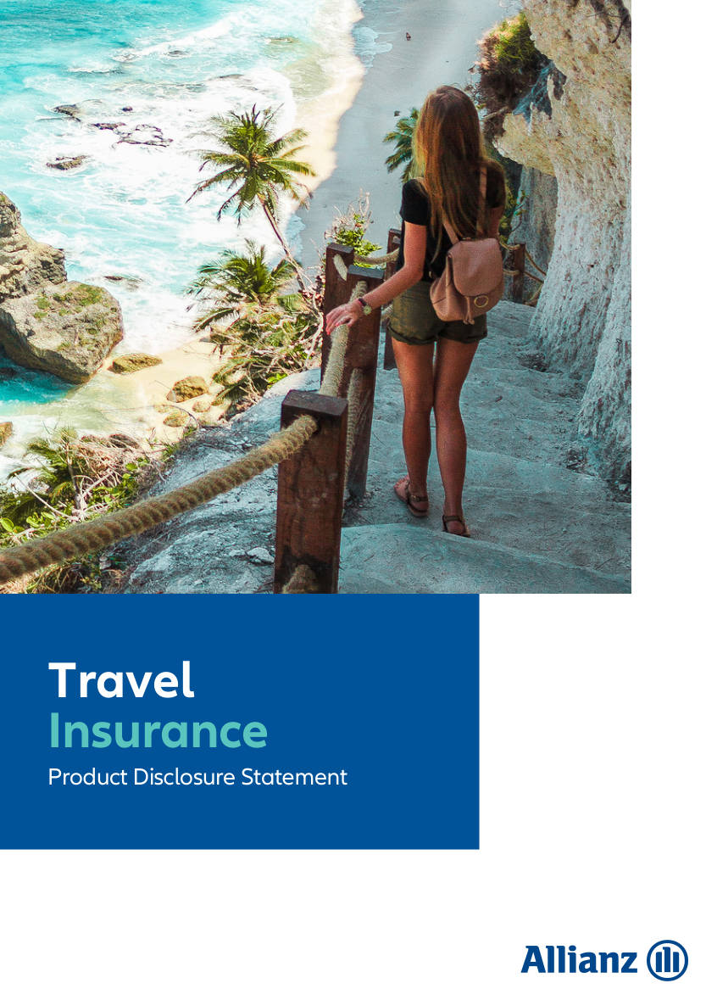
| Travel Insurance Product Disclosure Statement |
|---|
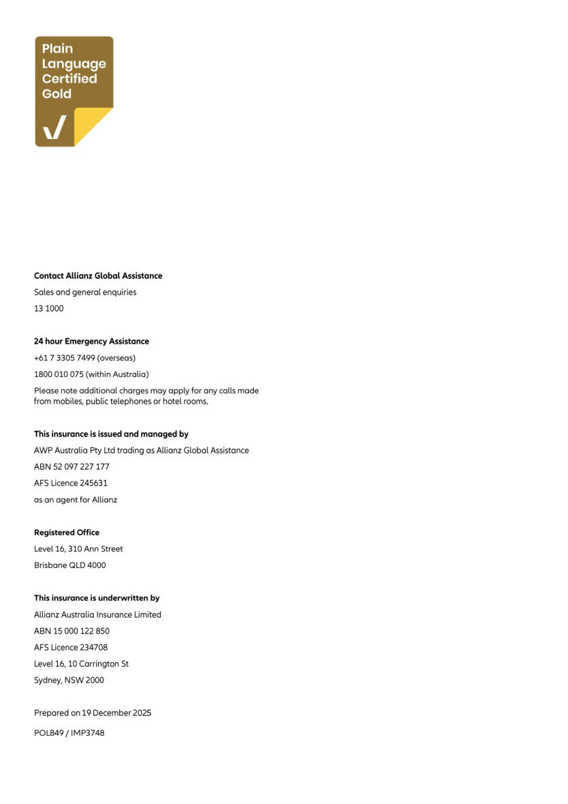
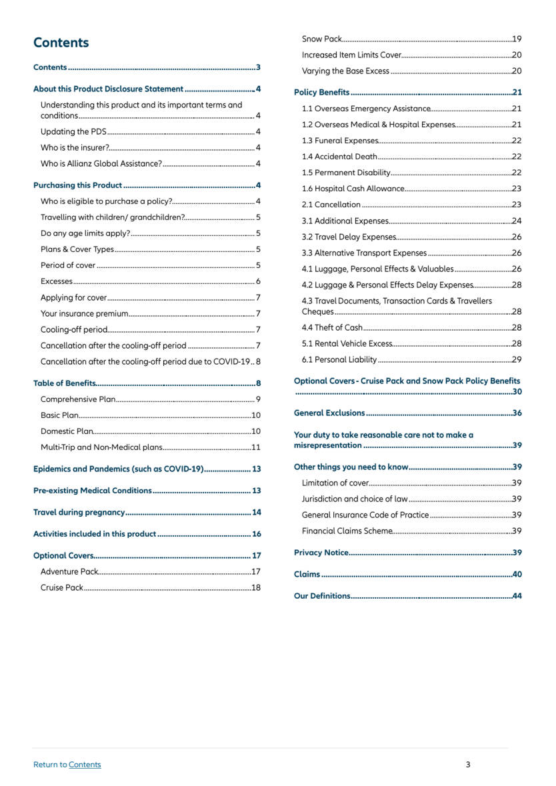
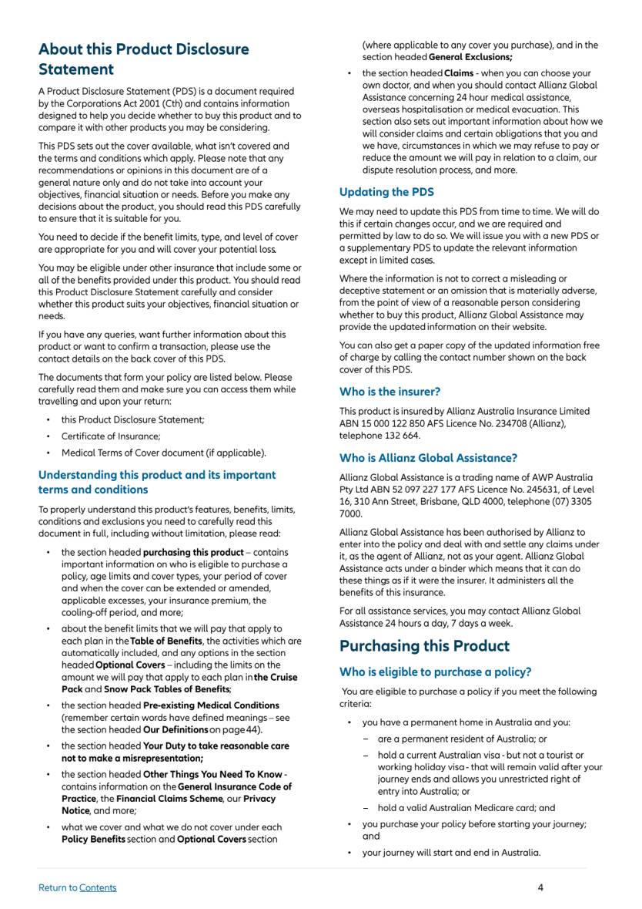
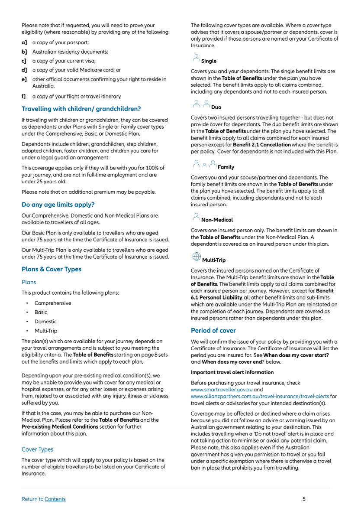
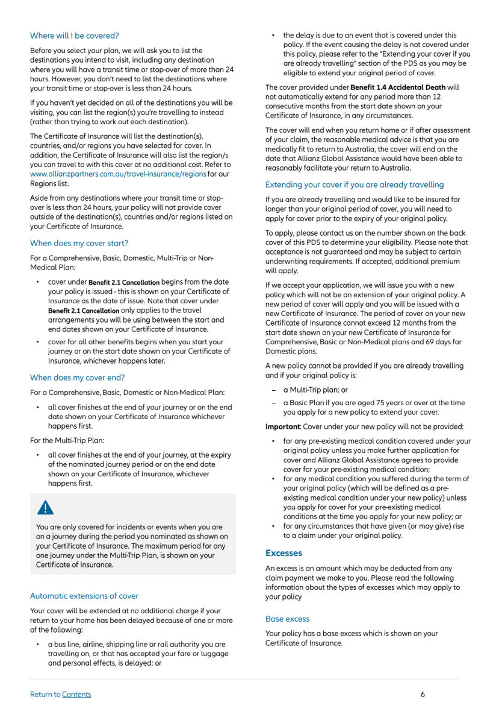
| A | ||
|---|---|---|
| You are only covered for incidents or events when you are | ||
| on a journey during the period you nominated as shown on | ||
| your Certificate of Insurance. The maximum period for any | ||
| one journey under the Multi-Trip Plan, is shown on your | ||
| Certificate of Insurance. |
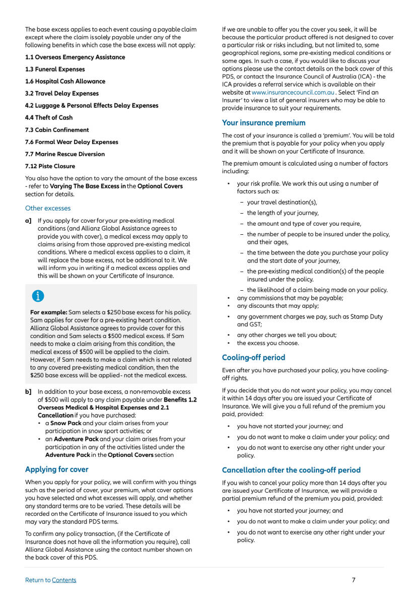
| 0 | ||
|---|---|---|
| For example: Sam selects a $250 base excess for his policy. | ||
| Sam applies for cover for a pre-existing heart condition. | ||
| Allianz Global Assistance agrees to provide cover for this | ||
| condition and Sam selects a $500 medical excess. If Sam | ||
| needs to make a claim arising from this condition, the | ||
| medical excess of $500 will be applied to the claim. | ||
| However, if Sam needs to make a claim which is not related | ||
| to any covered pre-existing medical condition, then the | ||
| $250 base excess will be applied -not the medical excess. |
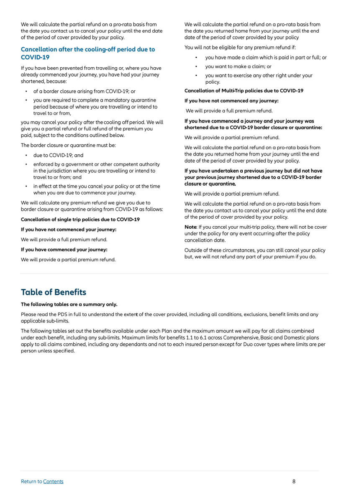
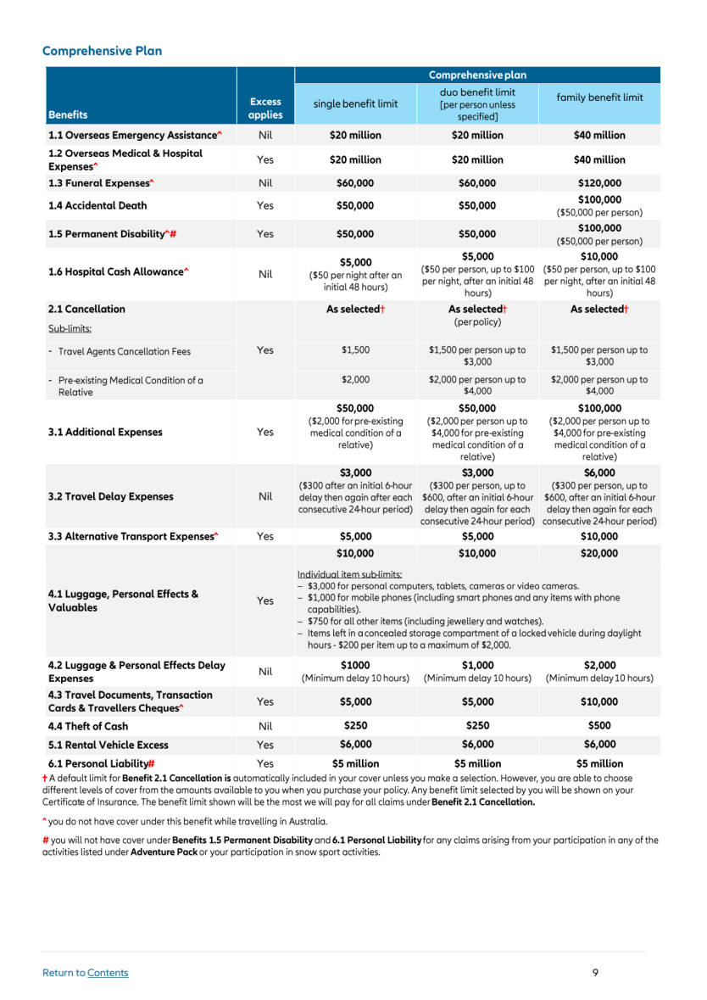
| Comprehensive plan | ||||
|---|---|---|---|---|
| duo benefit limit | ||||
| family benefit limit | ||||
| single benefit limit | [per person unless | |||
| Benefits | specified] | |||
| 1.1 Overseas Emergency Assistance" | Nil | $20 million | $20 million | $40 million |
| 1.2 Overseas Medical & Hospital | Yes | |||
| $20 million | $20 million | $40 million | ||
| Expenses" | ||||
| 1.3 Funeral Expenses" | Nil | $60,000 | $60,000 | $120,000 |
| Yes | $100,000 | |||
| 1.4 Accidental Death | $50,000 | $50,000 | ||
| ($50,000 per person) | ||||
| Yes | $100,000 | |||
| 1.5 Permanent Disability"# | $50,000 | $50,000 | ||
| ($50,000 per person) | ||||
| Nil | $5,000 | $10,000 | ||
| $5,000 | ||||
| 1.6 Hospital Cash Allowance" | ($50 per night after an | ($50 per person, up to $100 | ($50 per person, up to $100 | |
| per night, after an initial 48 | per night, after an initial 48 | |||
| initial 48 hours) | hours) | hours) | ||
| 2.1 Cancellation | As selectedt | As selectedt | As selectedt | |
| (per policy) | ||||
| Sub-limits: | ||||
| - Travel Agents Cancellation Fees | Yes | $1,500 | $1,500 per person up to | $1,500 per person up to |
| $3,000 | $3,000 | |||
| - Pre-existing Medical Condition of a | $2,000 | $2,000 per person up to | $2,000 per person up to | |
| Relative | $4,000 | $4,000 | ||
| Yes | $50,000 | $50,000 | $100,000 | |
| ($2,000 for pre-existing | ($2,000 per person up to | ($2,000 per person up to | ||
| 3.1 Additional Expenses | medical condition of a | $4,000 for pre-existing | $4,000 for pre-existing | |
| relative) | medical condition of a | medical condition of a | ||
| relative) | relative) | |||
| Nil | $3,000 | $3,000 | $6,000 | |
| ($300 after an initial 6-hour | ($300 per person, up to | ($300 per person, up to | ||
| 3.2 Travel Delay Expenses | delay then again after each | $600, after an initial 6-hour | $600, after an initial 6-hour | |
| consecutive 24-hour period) | delay then again for each | delay then again for each | ||
| consecutive 24-hour period) | consecutive 24-hour period) | |||
| 3.3 Alternative Transport Expenses" | Yes | $5,000 | $5,000 | $10,000 |
| Yes | $10,000 | $10,000 | $20,000 | |
| Individual item sub-limits: | ||||
| - $3,000 for personal computers, tablets, cameras or video cameras. | ||||
| 4.1 Luggage, Personal Effects & | ||||
| - $1,000 for mobile phones (including smart phones and any items with phone | ||||
| Valuables | capabilities). | |||
| - $750 for all other items (including jewellery and watches). | ||||
| - Items left in a concealed storage compartment of a locked vehicle during daylight | ||||
| hours -$200 per item up to a maximum of $2,000. | ||||
| 4.2 Luggage & Personal Effects Delay | Nil | $1000 | $1,000 | $2,000 |
| Expenses | (Minimum delay 10 hours) | (Minimum delay 10 hours) | (Minimum delay 10 hours) | |
| 4.3 Travel Documents, Transaction | Yes | |||
| $5,000 | $5,000 | $10,000 | ||
| Cards & Travellers Cheques" | ||||
| 4.4 Theft of Cash | Nil | $250 | $250 | $500 |
| 5.1 Rental Vehicle Excess | Yes | $6,000 | $6,000 | $6,000 |
| 6.1 Personal Liability# | Yes | $5 million | $5 million | $5 million |
| Benefits | Excessapplies | Comprehensive plan | Comprehensive plan | Comprehensive plan | Comprehensive plan | Comprehensive plan | |
|---|---|---|---|---|---|---|---|
| Benefits | Excessapplies | single benefit limit | duo benefit limit[per person unlessspecified] | duo benefit limit[per person unlessspecified] | duo benefit limit[per person unlessspecified] | family benefit limit | |
| 1.1 Overseas Emergency Assistance^ | Nil | $20 million | $20 million | $20 million | $20 million | $40 million | |
| 1.2 Overseas Medical & HospitalExpenses^ | Yes | $20 million | $20 million | $20 million | $20 million | $40 million | |
| 1.3 Funeral Expenses^ | Nil | $60,000 | $60,000 | $60,000 | $60,000 | $120,000 | |
| 1.4 Accidental Death | Yes | $50,000 | $50,000 | $50,000 | $50,000 | $100,000($50,000 per person) | |
| 1.5 Permanent Disability^# | Yes | $50,000 | $50,000 | $50,000 | $50,000 | $100,000($50,000 per person) | |
| 1.6 Hospital Cash Allowance^ | Nil | $5,000($50 per night after aninitial 48 hours) | $5,000($50 per person, up to $100per night, after an initial 48hours) | $5,000($50 per person, up to $100per night, after an initial 48hours) | $5,000($50 per person, up to $100per night, after an initial 48hours) | $10,000($50 per person, up to $100per night, after an initial 48hours) | |
| 2.1 CancellationSub-limits: | As selectedt | As selectedt(per policy) | As selectedt(per policy) | As selectedt(per policy) | As selectedt | ||
| - Travel Agents Cancellation Fees | Yes | $1,500 | $1,500 per person up to$3,000 | $1,500 per person up to$3,000 | $1,500 per person up to$3,000 | $1,500 per person up to$3,000 | |
| Pre-existing Medical Condition of aRelative | $2,000 | $2,000 per person up to$4,000 | $2,000 per person up to$4,000 | $2,000 per person up to$4,000 | $2,000 per person up to$4,000 | ||
| 3.1 Additional Expenses | Yes | $50,000($2,000 for pre-existing | $50,000 | $50,000 | $50,000 | $100,000 | |
| 3.1 Additional Expenses | Yes | $50,000($2,000 for pre-existing | ($2,000 per person up to | ($2,000 per person up to | ($2,000 per person up to | ($2,000 per person up to | |
| 3.1 Additional Expenses | Yes | medical condition of a | $4,000 for pre-existing | $4,000 for pre-existing | $4,000 for pre-existing | $4,000 for pre-existing | |
| 3.1 Additional Expenses | relative) | medical condition of a | medical condition of a | medical condition of a | medical condition of a | ||
| 3.1 Additional Expenses | relative) | relative) | relative) | relative) | relative) | ||
| 3.2 Travel Delay Expenses | Nil | $3,000($300 after an initial 6-hourdelay then again after each | $3,000($300 per person, up to | $3,000($300 per person, up to | $3,000($300 per person, up to | $6,000($300 per person, up to | |
| 3.2 Travel Delay Expenses | Nil | $3,000($300 after an initial 6-hourdelay then again after each | $600, after | $600, after | $600, after an initial 6-hour | $600, after an initial 6-hour | $600, after an initial 6-hourdelay then again for each |
| 3.2 Travel Delay Expenses | consecutive 24-hour period) | delay then again for each | delay then again for each | delay then again for each | $600, after an initial 6-hourdelay then again for each | ||
| 3.2 Travel Delay Expenses | consecutive 24-hour period) | consecutive 24-hour period) | consecutive 24-hour period) | consecutive 24-hour period) | consecutive 24-hour period) | ||
| 3.3 Alternative Transport Expenses^ | Yes | $5,000 | $5,000 | $5,000 | $5,000 | $10,000 | |
| 4.1 Luggage, Personal Effects &Valuables | Yes | $10,000Individual item sub-limits:$3,000 for personal compute$1,000 for mobile phones (icapabilities).$750 for all other items (incItems left in a concealed sthours - $200 per item up to | $10,000 | $10,000 | $10,000 | $20,000 | |
| 4.1 Luggage, Personal Effects &Valuables | Yes | $10,000Individual item sub-limits:$3,000 for personal compute$1,000 for mobile phones (icapabilities).$750 for all other items (incItems left in a concealed sthours - $200 per item up to | cameras.y items with phonevehicle during daylight | ||||
| 4.1 Luggage, Personal Effects &Valuables | Yes | $10,000Individual item sub-limits:$3,000 for personal compute$1,000 for mobile phones (icapabilities).$750 for all other items (incItems left in a concealed sthours - $200 per item up to | rs, tablets, cameras or videoncluding smart phones and anluding jewellery and watches).orage compartment of a lockeda maximum of $2,000. | rs, tablets, cameras or videoncluding smart phones and anluding jewellery and watches).orage compartment of a lockeda maximum of $2,000. | rs, tablets, cameras or videoncluding smart phones and anluding jewellery and watches).orage compartment of a lockeda maximum of $2,000. | cameras.y items with phonevehicle during daylight | |
| 4.2 Luggage & Personal Effects DelayExpenses | Nil | $1000(Minimum delay 10 hours) | $1,000 | $1,000 | $1,000 | $2,000 | |
| 4.2 Luggage & Personal Effects DelayExpenses | Nil | $1000(Minimum delay 10 hours) | (Minimum delay 10 hours) | (Minimum delay 10 hours) | (Minimum delay 10 hours) | (Minimum delay 10 hours) | |
| 4.3 Travel Documents, TransactionCards & Travellers Cheques^ | Yes | $5,000 | $5,000 | $5,000 | $5,000 | $10,000 | |
| 4.4 Theft of Cash | Nil | $250 | $250 | $250 | $250 | $500 | |
| 5.1 Rental Vehicle Excess | Yes | $6,000 | $6,000 | $6,000 | $6,000 | $6,000 | |
| 6.1 Personal Liability# | Yes | $5 million | $5 million | $5 million | $5 million | $5 million |
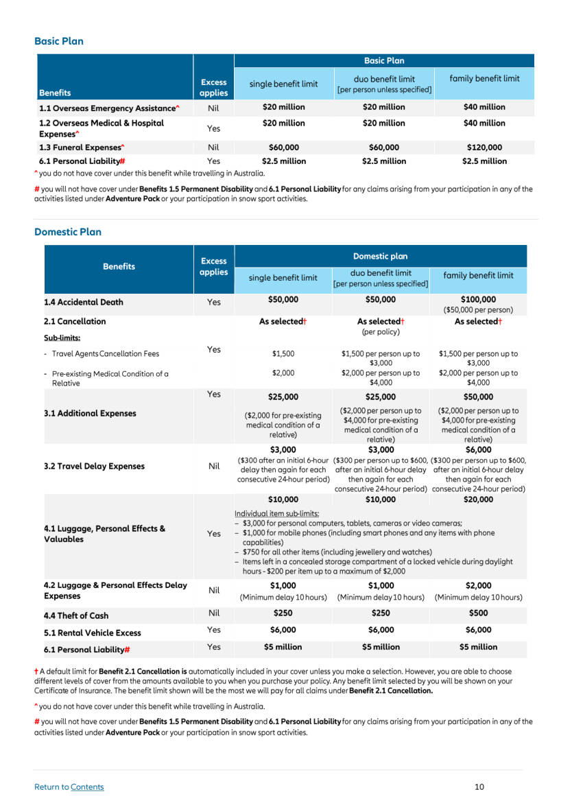
| Benefits | Basic Plan | |||
|---|---|---|---|---|
| duo benefit limit [per person unless specified] | family benefit limit | |||
| single benefit limit | ||||
| 1.1 Overseas Emergency AssistanceA | Nil | $20 million | $20 million | $40 million |
| 1.2 Overseas Medical & Hospital Expenses A | Yes | $20 million | $20 million | $40 million |
| 1.3 Funeral ExpensesA | Nil | $60,000 | $60,000 | $120,000 |
| 6.1 Personal Liability# | Yes | $2.5 million | $2.5 million | $2.5 million |
| Domestic plan | ||||
|---|---|---|---|---|
| Benefits | ||||
| single benefit limit | duo benefit limit | family benefit limit | ||
| ■ | [per person unless specified] | |||
| 1.4 Accidental Death | Yes | $50,000 | $50,000 | $100,000 |
| ($50,000 per person) | ||||
| 2.1 Cancellation | As selectedt | As selectedt | As selectedt | |
| (per policy) | ||||
| Sub-limits: | ||||
| Yes | ||||
| Travel Agents Cancellation Fees | $1,500 | $1,500 per person up to | $1,500 per person up to | |
| $3,000 | $3,000 | |||
| - Pre-existing Medical Condition of a | $2,000 | $2,000 per person up to | $2,000 per person up to | |
| Relative | $4,000 | $4,000 | ||
| Yes | $25,000 | $25,000 | $50,000 | |
| 3.1 Additional Expenses | ($2,000 for pre-existing | ($2,000 per person up to | ($2,000 per person up to | |
| $4,000 for pre-existing | $4,000 for pre-existing | |||
| medical condition of a | ||||
| medical condition of a | medical condition of a | |||
| relative) | ||||
| relative) | relative) | |||
| $3,000 | $3,000 | $6,000 | ||
| ($300 after an initial 6-hour | ($300 per person up to $600, | ($300 per person up to $600, | ||
| 3.2 Travel Delay Expenses | Nil | |||
| delay then again for each | after an initial 6-hour delay | after an initial 6-hour delay | ||
| consecutive 24-hour period) | then again for each | then again for each | ||
| consecutive 24-hour period) | consecutive 24-hour period) | |||
| $10,000 | $10,000 | $20,000 | ||
| Individual item sub-limits: | ||||
| - $3,000 for personal computers, tablets, cameras or video cameras; | ||||
| 4.1 Luggage, Personal Effects & | ||||
| Yes | - $1,000 for mobile phones (including smart phones and any items with phone | |||
| Valuables | ||||
| capabilities) | ||||
| - $750 for all other items (including jewellery and watches) | ||||
| - Items left in a concealed storage compartment of a locked vehicle during daylight | ||||
| hours -$200 per item up to a maximum of $2,000 | ||||
| 4.2 Luggage & Personal Effects Delay | $1,000 | $1,000 | $2,000 | |
| Nil | ||||
| Expenses | (Minimum delay 10 hours) | (Minimum delay 10 hours) | (Minimum delay 10 hours) | |
| 4.4 Theft of Cash | Nil | $250 | $250 | $500 |
| 5.1 Rental Vehicle Excess | Yes | $6,000 | $6,000 | $6,000 |
| 6.1 Personal Liability# | Yes | $5 million | $5 million | $5 million |
| Benefits | Excessapplies | Basic Plan | Basic Plan | Basic Plan |
|---|---|---|---|---|
| Benefits | Excessapplies | single benefit limit | duo benefit limit[per person unless specified] | family benefit limit |
| 1.1 Overseas Emergency Assistance^ | Nil | $20 million $20 million | $20 million $20 million | $40 million |
| 1.2 Overseas Medical & HospitalExpenses^ | Yes | $20 million $20 million | $20 million $20 million | $40 million |
| 1.3 Funeral Expenses^ | Nil | $60,000 | $60,000 | $120,000 |
| 6.1 Personal Liability# | Yes | $2.5 million $2.5 million | $2.5 million $2.5 million | $2.5 million |
| Benefits | Excessapplies | Domestic plan | Domestic plan | Domestic plan |
|---|---|---|---|---|
| Benefits | Excessapplies | single benefit limit | duo benefit limit[per person unless specified] | family benefit limit |
| 1.4 Accidental Death | Yes | $50,000 | $50,000 | $100,000($50,000 per person) |
| 2.1 Cancellation | As selectedt | As selectedt | As selectedt | |
| Sub-limits: | $1,500$2,000 | (per policy)$1,500 per person up to$3,000$2,000 per person up to$4,000 | $1,500 per person up to$3,000$2,000 per person up to$4,000 | |
| - Travel Agents Cancellation Fees- Pre-existing Medical Condition of aRelative | Yes | $1,500$2,000 | (per policy)$1,500 per person up to$3,000$2,000 per person up to$4,000 | $1,500 per person up to$3,000$2,000 per person up to$4,000 |
| 3.1 Additional Expenses | Yes | $25,000 | $25,000 | $50,000 |
| 3.1 Additional Expenses | Yes | ($2,000 for pre-existingmedical condition of arelative) | ($2,000 per person up to$4,000 for pre-existingmedical condition of arelative) | ( |
| 3.1 Additional Expenses | Yes | ($2,000 for pre-existingmedical condition of arelative) | ($2,000 per person up to$4,000 for pre-existingmedical condition of arelative) | medical condition of arelative) |
| 3.2 Travel Delay Expenses | Nil | $3,000($300 after an initial 6-houdelay then again for each | $3,000 | $6,000 |
| 3.2 Travel Delay Expenses | Nil | $3,000($300 after an initial 6-houdelay then again for each | r ($300 per person up to $600, | ($300 per person up to $600, |
| 3.2 Travel Delay Expenses | Nil | $3,000($300 after an initial 6-houdelay then again for each | after an initial 6-hour delay a | fter an initial 6-hour delay |
| 3.2 Travel Delay Expenses | Nil | consecutive 24-hour period) | then again for each | then again for each |
| 3.2 Travel Delay Expenses | Nil | consecutive 24-hour period) c | onsecutive 24-hour period) | |
| 4.1 Luggage, Personal Effects &Valuables | Yes | $10,000Individual item sub-limits:$3,000 for personal compute$1,000 for mobile phones (i | $10,000 | $20,000 |
| 4.1 Luggage, Personal Effects &Valuables | Yes | $10,000Individual item sub-limits:$3,000 for personal compute$1,000 for mobile phones (i | cameras;y items with phone | |
| 4.1 Luggage, Personal Effects &Valuables | Yes | $10,000Individual item sub-limits:$3,000 for personal compute$1,000 for mobile phones (i | rs, tablets, cameras or videoncluding smart phones and an | cameras;y items with phone |
| 4.1 Luggage, Personal Effects &Valuables | Yes | capabilities)$750 for all other items (inchours - $200 per item up to | luding jewellery and watches)a maximum of $2,000 | cameras;y items with phone |
| 4.1 Luggage, Personal Effects &Valuables | Yes | capabilities)$750 for all other items (inchours - $200 per item up to | luding jewellery and watches)a maximum of $2,000 | d vehicle during daylight |
| 4.2 Luggage & Personal Effects DelayExpenses | Nil | $1,000(Minimum delay 10 hours) | $1,000(Minimum delay 10 hours) | $2,000(Minimum delay 10 hours) |
| 4.4 Theft of Cash | Nil | $250 | $250 | $500 |
| 5.1 Rental Vehicle Excess | Yes | $6,000 | $6,000 | $6,000 |
| 6.1 Personal Liability# | Yes | $5 million | $5 million | $5 million |
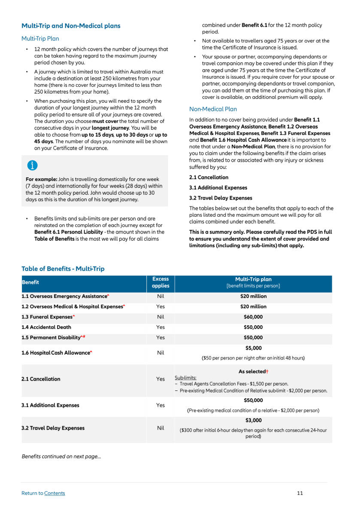
| 0 | ||
|---|---|---|
| For example: John is travelling domestically for one week | ||
| (7 days) and internationally for four weeks (28 days) within | ||
| the 12 month policy period. John would choose up to 30 | ||
| days as this is the duration of his longest journey. |
| Multi-Trip plan | ||
|---|---|---|
| Benefit | ||
| - | [benefit limits per person] | |
| 1.1 Overseas Emergency AssistanceA | Nil | S20 million |
| 1.2 Overseas Medical & Hospital ExpensesA | Yes | $20 million |
| 1.3 Funeral ExpensesA | Nil | $60,000 |
| 1.4 Accidental Death | Yes | $50,000 |
| 1.5 Permanent DisabilityA# | Yes | $50,000 |
| $5,000 | ||
| 1.6 Hospital Cash AllowanceA | Nil | |
| ($50 per person per night after an initial 48 hours) | ||
| As selectedt | ||
| 2.1 Cancellation | Yes | Sub-limits: |
| ‒ Travel Agents Cancellation Fees -$1,500 per person. | ||
| ‒ Pre-existing Medical Condition of Relative sub-limit -$2,000 per person. | ||
| $50,000 | ||
| 3.1 Additional Expenses | Yes | |
| (Pre-existing medical condition of a relative -$2,000 per person) | ||
| $3,000 | ||
| 3.2 Travel Delay Expenses | Nil | |
| ($300 after initial 6-hour delay then again for each consecutive 24-hour | ||
| period) | ||
| Benefits continued on next page. .. |
| Benefit | Excessapplies | Multi-Trip plan[benefit limits per person] |
|---|---|---|
| 1.1 Overseas Emergency Assistance^ | Nil | $20 million |
| 1.2 Overseas Medical & Hospital Expenses^ | Yes | $20 million |
| 1.3 Funeral Expenses^ | Nil | $60,000 |
| 1.4 Accidental Death | Yes | $50,000 |
| 1.5 Permanent Disability^# | Yes | $50,000 |
| 1.6 Hospital Cash Allowance^ | Nil | $5,000($50 per person per night after an initial 48 hours) |
| 2.1 Cancellation | Yes | As selectedtSub-limits:Travel Agents Cancellation Fees - $1,500 per person.- Pre-existing Medical Condition of Relative sub-limit - $2,000 per person.$50,000(Pre-existing medical condition of a relative - $2,000 per person) |
| 3.1 Additional Expenses | Yes | As selectedtSub-limits:Travel Agents Cancellation Fees - $1,500 per person.- Pre-existing Medical Condition of Relative sub-limit - $2,000 per person.$50,000(Pre-existing medical condition of a relative - $2,000 per person) |
| 3.2 Travel Delay Expenses | Nil | $3,000($300 after initial 6-hour delay then again for each consecutive 24-hourperiod) |
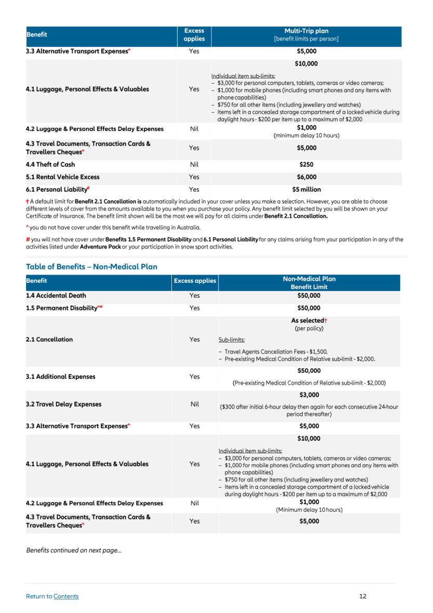
| Multi-Trip plan | ||
|---|---|---|
| Benefit | ||
| - | [benefit limits per person] | |
| 3.3 Alternative Transport ExpensesA | Yes | $5,000 |
| $10,000 | ||
| Individual item sub-limits: | ||
| - $3,000 for personal computers, tablets, cameras or video cameras; | ||
| 4.1 Luggage, Personal Effects & Valuables | Yes | - $1,000 for mobile phones (including smart phones and any items with |
| phone capabilities) | ||
| - $750 for all other items (including jewellery and watches) | ||
| - Items left in a concealed storage compartment of a locked vehicle during | ||
| daylight hours -$200 per item up to a maximum of $2,000 | ||
| 4.2 Luggage & Personal Effects Delay Expenses | Nil | $1,000 |
| (minimum delay 10 hours) | ||
| 4.3 Travel Documents, Transaction Cards & | ||
| Yes | $5,000 | |
| Travellers ChequesA | ||
| 4.4 Theft of Cash | Nil | $250 |
| 5.1 Rental Vehicle Excess | Yes | $6,000 |
| 6.1 Personal Liability# | Yes | $5 million |
| Benefit | Excess applies | Non-Medical Plan |
|---|---|---|
| Benefit Limit | ||
| 1.4 Accidental Death | Yes | $50,000 |
| 1.5 Permanent DisabilityA# | Yes | $50,000 |
| As selectedt | ||
| (per policy) | ||
| 2.1 Cancellation | Yes | Sub-limits: |
| ‒ Travel Agents Cancellation Fees -$1,500. | ||
| ‒ Pre-existing Medical Condition of Relative sub-limit -$2,000. | ||
| $50,000 | ||
| 3.1 Additional Expenses | Yes | |
| (Pre-existing Medical Condition of Relative sub-limit -$2,000) | ||
| $3,000 | ||
| 3.2 Travel Delay Expenses | Nil | |
| ($300 after initial 6-hour delay then again for each consecutive 24-hour | ||
| period thereafter) | ||
| 3.3 Alternative Transport ExpensesA | Yes | $5,000 |
| $10,000 | ||
| Individual item sub-limits: | ||
| - $3,000 for personal computers, tablets, cameras or video cameras; | ||
| 4.1 Luggage, Personal Effects & Valuables | Yes | - $1,000 for mobile phones (including smart phones and any items with |
| phone capabilities) | ||
| - $750 for all other items (including jewellery and watches) | ||
| - Items left in a concealed storage compartment of a locked vehicle | ||
| during daylight hours -$200 per item up to a maximum of $2,000 | ||
| 4.2 Luggage & Personal Effects Delay Expenses | Nil | $1,000 |
| (Minimum delay 10 hours) | ||
| 4.3 Travel Documents, Transaction Cards & | ||
| Yes | $5,000 | |
| Travellers ChequesA | ||
| Benefits continued on next page. .. |
| Benefit | Excess applies | Multi-Trip plan [benefit limits per person] |
|---|---|---|
| 3.3 Alternative Transport Expenses^ | Yes | $5,000 |
| 4.1 Luggage, Personal Effects & Valuables | Yes | $10,000 Individual item sub-limits: $3,000 for personal computers, tablets, cameras or video cameras; |
| 4.1 Luggage, Personal Effects & Valuables | 4.2 Luggage & Personal Effects Delay Expenses | $1,000 for mobile phones (including smart phones and any items with phone capabilities) $750 for all other items (including jewellery and watches) Items left in a concealed storage compartment of a locked vehicle during daylight hours - $200 per item up to a maximum of $2,000 |
| 4.1 Luggage, Personal Effects & Valuables | Nil | $1,000 (minimum delay 10 hours) |
| 4.3 Travel Documents, Transaction Cards & Travellers Cheques^ | Yes | $5,000 |
| 4.4 Theft of Cash | Nil | $250 |
| 5.1 Rental Vehicle Excess | Yes | $6,000 |
| 6.1 Personal Liability# | Yes | $5 million |
| Benefit | Excess applies | Non-Medical PlanBenefit Limit |
|---|---|---|
| 1.4 Accidental Death | Yes | $50,000 |
| 1.5 Permanent Disability^# | Yes | $50,000 |
| 2.1 Cancellation | Yes | As selectedt(per policy)Sub-limits:Travel Agents Cancellation Fees - $1,500.Pre-existing Medical Condition of Relative sub-limit - $2,000. |
| 3.1 Additional Expenses | Yes | $50,000(Pre-existing Medical Condition of Relative sub-limit - $2,000) |
| 3.2 Travel Delay Expenses | Nil | $3,000($300 after initial 6-hour delay then again for each consecutive 24-hourperiod thereafter) |
| 3.3 Alternative Transport Expenses^ | Yes | $5,000 |
| 4.1 Luggage, Personal Effects & Valuables | Yes | $10,000Individual item sub-limits:$3,000 for personal computers, tablets, cameras or video cameras;$1,000 for mobile phones (including smart phones and any items withphone capabilities)$750 for all other items (including jewellery and watches)Items left in a concealed storage compartment of a locked vehicleduring daylight hours - $200 per item up to a maximum of $2,000 |
| 4.2 Luggage & Personal Effects Delay Expenses4.3 Travel Documents, Transaction Cards &Travellers Cheques^ | Nil | $1,000(Minimum delay 10 hours) |
| 4.2 Luggage & Personal Effects Delay Expenses4.3 Travel Documents, Transaction Cards &Travellers Cheques^ | Yes | $5,000 |
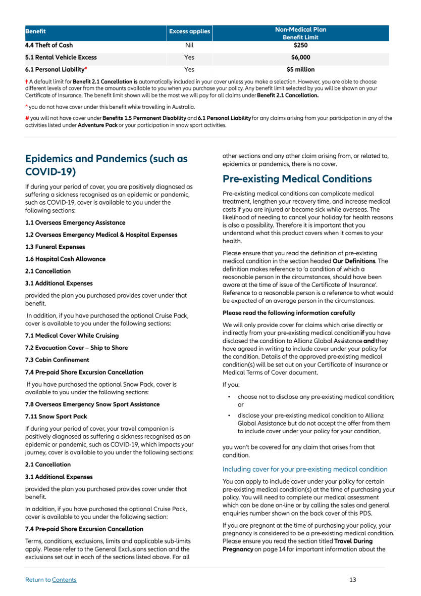
| Benefit | Excess applies | Non-Medical Plan |
|---|---|---|
| Benefit Limit | ||
| 4.4 Theft of Cash | Nil | $250 |
| 5.1 Rental Vehicle Excess | Yes | $6,000 |
| 6.1 Personal Liability' | Yes | $5 million |
| Benefit | Excess applies | Non-Medical PlanBenefit Limit |
|---|---|---|
| 4.4 Theft of Cash | Nil | $250 |
| 5.1 Rental Vehicle Excess6.1 Personal Liability# | Yes | $6,000$5 million |
| 5.1 Rental Vehicle Excess6.1 Personal Liability# | Yes | $6,000$5 million |
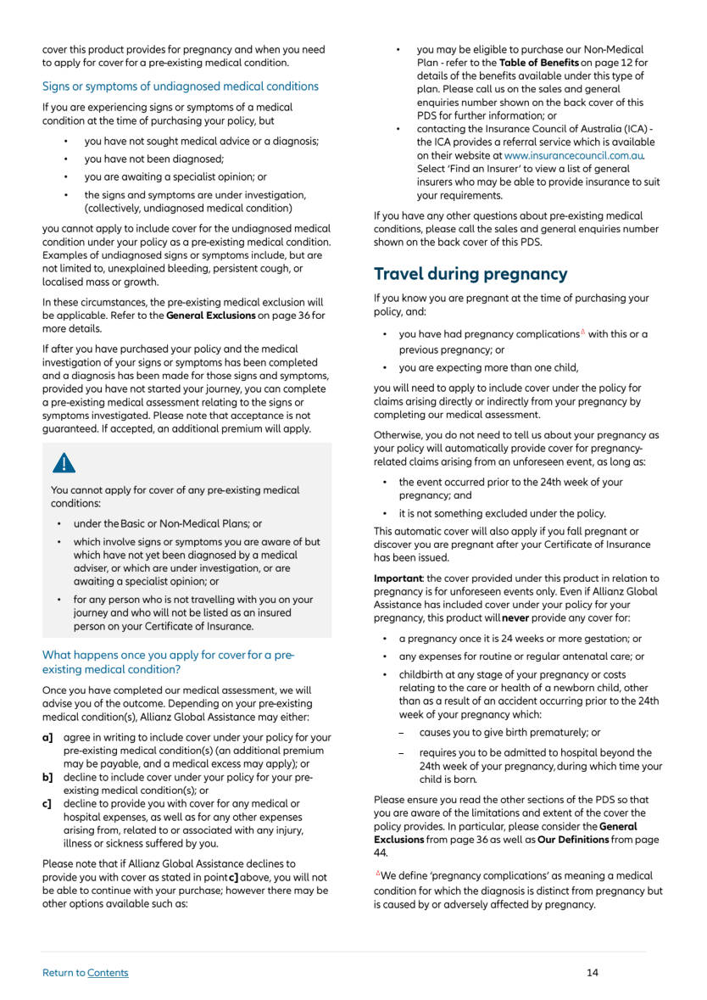
| A | ||
|---|---|---|
| You cannot apply for cover of any pre-existing medical | ||
| conditions: | ||
| under the Basic or Non-Medical Plans; or | ||
| which involve signs or symptoms you are aware of but | ||
| which have not yet been diagnosed by a medical | ||
| adviser, or which are under investigation, or are | ||
| awaiting a specialist opinion; or | ||
| for any person who is not travelling with you on your | ||
| journey and who will not be listed as an insured | ||
| person on your Certificate of Insurance. |
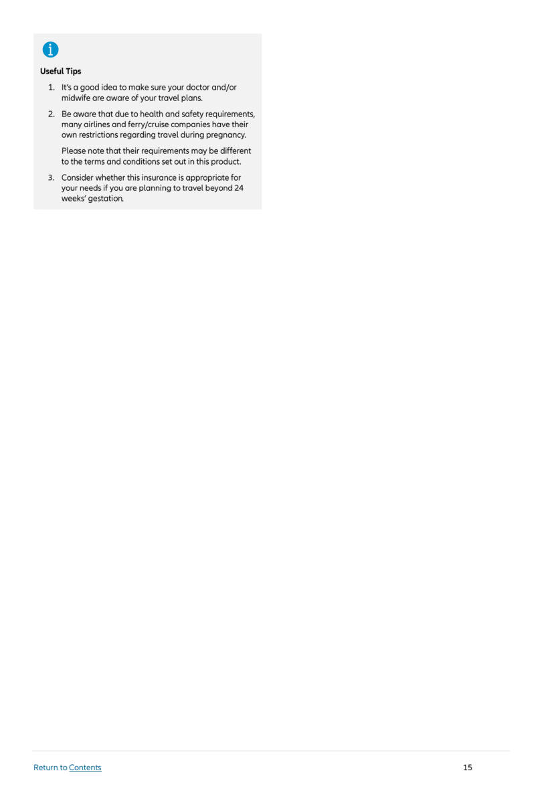
| 0 | ||
|---|---|---|
| Useful Tips | ||
| 1. It's a good idea to make sure your doctor and/or | ||
| midwife are aware of your travel plans. | ||
| 2. Be aware that due to health and safety requirements, | ||
| many airlines and ferry/cruise companies have their | ||
| own restrictions regarding travel during pregnancy. | ||
| Please note that their requirements may be different | ||
| to the terms and conditions set out in this product. | ||
| 3. Consider whether this insurance is appropriate for | ||
| your needs if you are planning to travel beyond 24 | ||
| weeks' gestation. |
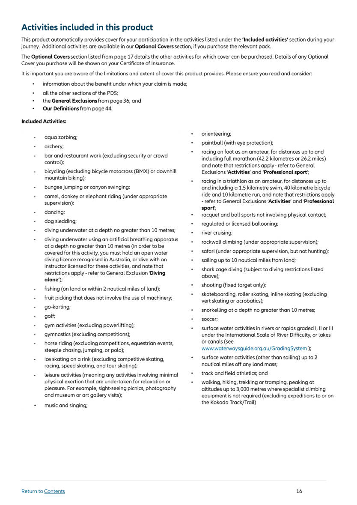
| aqua zorbing; | orienteering; |
|---|---|
| paintball (with eye protection); | |
| archery; | |
| racing on foot as an amateur, for distances up to and | |
| bar and restaurant work (excluding security or crowd | |
| including full marathon (42.2 kilometres or 26.2 miles) | |
| control); | |
| and note that restrictions apply -refer to General | |
| bicycling (excluding bicycle motocross (BMX) or downhill | Exclusions 'Activities' and 'Professional sport'; |
| mountain biking); | |
| racing in a triathlon as an amateur, for distances up to | |
| bungee jumping or canyon swinging; | and including a 1.5 kilometre swim, 40 kilometre bicycle |
| camel, donkey or elephant riding (under appropriate | ride and 10 kilometre run, and note that restrictions apply |
| supervision); | -refer to General Exclusions 'Activities' and 'Professional |
| sport'; | |
| dancing; | |
| racquet and ball sports not involving physical contact; | |
| dog sledding; | |
| regulated or licensed ballooning; | |
| diving underwater at a depth no greater than 10 metres; | |
| river cruising; | |
| diving underwater using an artificial breathing apparatus | |
| rockwall climbing (under appropriate supervision); | |
| at a depth no greater than 10 metres (in order to be | |
| covered for this activity, you must hold an open water | safari (under appropriate supervision, but not hunting); |
| diving licence recognised in Australia, or dive with an | sailing up to 10 nautical miles from land; |
| instructor licensed for these activities, and note that | |
| shark cage diving (subject to diving restrictions listed | |
| restrictions apply -refer to General Exclusion 'Diving | |
| above); | |
| alone'); | |
| shooting (fixed target only); | |
| fishing (on land or within 2 nautical miles of land); | |
| skateboarding, roller skating, inline skating (excluding | |
| fruit picking that does not involve the use of machinery; | |
| vert skating or acrobatics); | |
| go-karting; | |
| snorkelling at a depth no greater than 10 metres; | |
| golf; | |
| soccer; | |
| gym activities (excluding powerlifting); | |
| surface water activities in rivers or rapids graded I, II or Ill | |
| gymnastics (excluding competitions); | under the International Scale of River Difficulty, or lakes |
| horse riding (excluding competitions, equestrian events, | or canals (see |
| steeple chasing, jumping, or polo); | www.waterwaysguide.org.au/GradingSystem ); |
| ice skating on a rink (excluding competitive skating, | surface water activities (other than sailing) up to 2 |
| racing, speed skating, and tour skating); | nautical miles off any land mass; |
| leisure activities (meaning any activities involving minimal | track and field athletics; and |
| physical exertion that are undertaken for relaxation or | walking, hiking, trekking or tramping, peaking at |
| pleasure. For example, sight-seeing picnics, photography | altitudes up to 3,000 metres where specialist climbing |
| and museum or art gallery visits); | equipment is not required (excluding expeditions to or on |
| music and singing; | the Kokoda Track/Trail) |
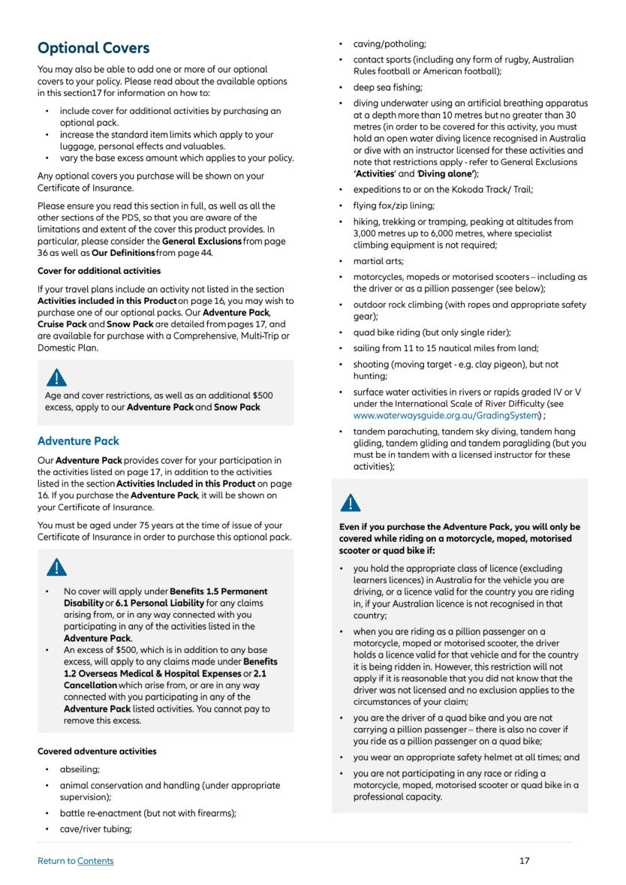
| A | ||
|---|---|---|
| Age and cover restrictions, as well as an additional $500 | ||
| excess, apply to our Adventure Pack and Snow Pack |
| A | ||
|---|---|---|
| No cover will apply under Benefits 1.5 Permanent | ||
| Disability or 6.1 Personal Liability for any claims | ||
| arising from, or in any way connected with you | ||
| participating in any of the activities listed in the | ||
| Adventure Pack. | ||
| An excess of $500, which is in addition to any base | ||
| excess, will apply to any claims made under Benefits | ||
| 1.2 Overseas Medical & Hospital Expenses or 2.1 | ||
| Cancellation which arise from, or are in any way | ||
| connected with you participating in any of the | ||
| Adventure Pack listed activities. You cannot pay to | ||
| remove this excess. |
| A | ||
|---|---|---|
| Even if you purchase the Adventure Pack, you will only be | ||
| covered while riding on a motorcycle, moped, motorised | ||
| scooter or quad bike if: | ||
| you hold the appropriate class of licence (excluding | ||
| learners licences) in Australia for the vehicle you are | ||
| driving, or a licence valid for the country you are riding | ||
| in, if your Australian licence is not recognised in that | ||
| country; | ||
| when you are riding as a pillion passenger on a | ||
| motorcycle, moped or motorised scooter, the driver | ||
| holds a licence valid for that vehicle and for the country | ||
| it is being ridden in. However, this restriction will not | ||
| apply if it is reasonable that you did not know that the | ||
| driver was not licensed and no exclusion applies to the | ||
| circumstances of your claim; | ||
| you are the driver of a quad bike and you are not | ||
| carrying a pillion passenger - there is also no cover if | ||
| you ride as a pillion passenger on a quad bike; | ||
| you wear an appropriate safety helmet at all times; and | ||
| you are not participating in any race or riding a | ||
| motorcycle, moped, motorised scooter or quad bike in a | ||
| professional capacity. |
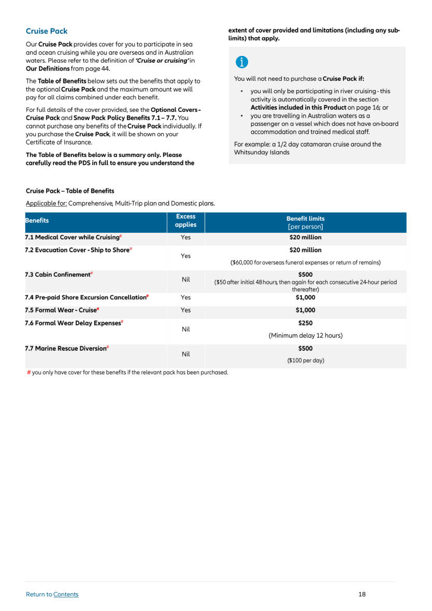
| 0 | ||
|---|---|---|
| You will not need to purchase a Cruise Pack if: | ||
| you will only be participating in river cruising -this | ||
| activity is automatically covered in the section | ||
| Activities included in this Product on page 16; or | ||
| you are travelling in Australian waters as a | ||
| passenger on a vessel which does not have on-board | ||
| accommodation and trained medical staff. | ||
| For example: a 1/2 day catamaran cruise around the | ||
| Whitsunday Islands |
| Benefits | Benefit limits | |
|---|---|---|
| I l l | [per person] | |
| 7.1 Medical Cover while Cruising# | Yes | $20 million |
| 7.2 Evacuation Cover -Ship to Shore# | $20 million | |
| Yes | ||
| ($60,000 for overseas funeral expenses or return of remains) | ||
| 7.3 Cabin Confinement# | $500 | |
| Nil | ||
| ($50 after initial 48 hours, then again for each consecutive 24-hour period | ||
| thereafter) | ||
| 7.4 Pre-paid Shore Excursion Cancellation# | Yes | $1,000 |
| 7.5 Formal Wear -Cruise# | Yes | $1,000 |
| 7.6 Formal Wear Delay Expenses# | $250 | |
| Nil | ||
| (Minimum delay 12 hours) | ||
| 7.7 Marine Rescue Diversion# | $500 | |
| Nil | ||
| ($100 per day) |
| Benefits | Excessapplies | Benefit limits[per person] |
|---|---|---|
| 7.1 Medical Cover while Cruising# | Yes | $20 million |
| 7.2 Evacuation Cover - Ship to Shore# | Yes | $20 million($60,000 for overseas funeral expenses or return of remains) |
| 7.3 Cabin Confinement# | Nil | $500($50 after initial 48 hours, then again for each consecutive 24-hour periodthereafter) |
| 7.4 Pre-paid Shore Excursion Cancellation#7.5 Formal Wear - Cruise#7.6 Formal Wear Delay Expenses# | Yes | $1,000 |
| 7.4 Pre-paid Shore Excursion Cancellation#7.5 Formal Wear - Cruise#7.6 Formal Wear Delay Expenses# | Yes | $1,000 |
| 7.4 Pre-paid Shore Excursion Cancellation#7.5 Formal Wear - Cruise#7.6 Formal Wear Delay Expenses# | Nil | $250(Minimum delay 12 hours) |
| 7.7 Marine Rescue Diversion# | Nil | $500($100 per day) |
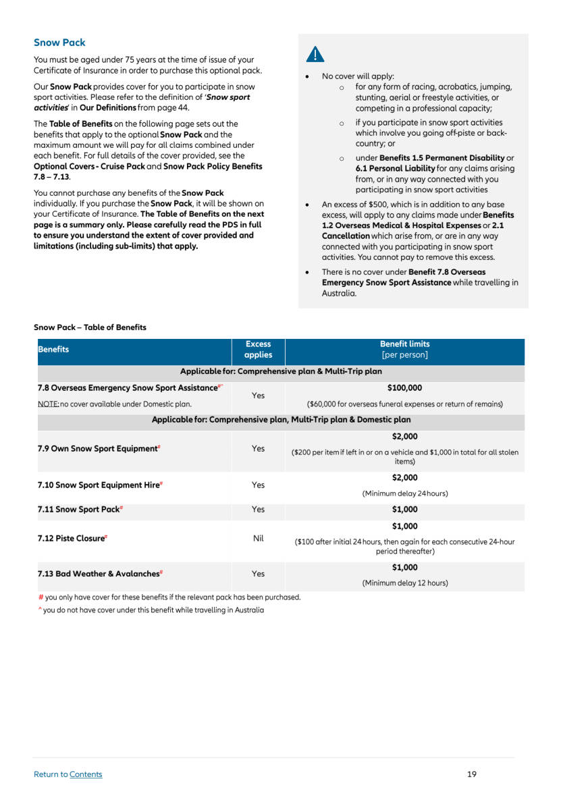
| A | ||
|---|---|---|
| • No cover will apply: | ||
| o for any form of racing, acrobatics, jumping, | ||
| stunting, aerial or freestyle activities, or | ||
| competing in a professional capacity; | ||
| o if you participate in snow sport activities | ||
| which involve you going off-piste or back | ||
| country; or | ||
| o under Benefits 1.5 Permanent Disability or | ||
| 6.1 Personal Liability for any claims arising | ||
| from, or in any way connected with you | ||
| participating in snow sport activities | ||
| • An excess of $500, which is in addition to any base | ||
| excess, will apply to any claims made under Benefits | ||
| 1.2 Overseas Medical & Hospital Expenses or 2.1 | ||
| Cancellation which arise from, or are in any way | ||
| connected with you participating in snow sport | ||
| activities. You cannot pay to remove this excess. | ||
| • There is no cover under Benefit 7.8 Overseas | ||
| Emergency Snow Sport Assistance while travelling in | ||
| Australia. |
| Benefit limits | ||
|---|---|---|
| Benefits | ||
| I l l | [per person] | |
| Applicable for: Comprehensive plan & Multi-Trip plan | ||
| 7.8 Overseas Emergency Snow Sport Assistancew | $100,000 | |
| Yes | ||
| NOTE: no cover available under Domestic plan. | ($60,000 for overseas funeral expenses or return of remains) | |
| Applicable for: Comprehensive plan, Multi-Trip plan & Domestic plan | ||
| $2,000 | ||
| 7.9 Own Snow Sport Equipment# | Yes | |
| ($200 per item if left in or on a vehicle and $1,000 in total for all stolen | ||
| items) | ||
| $2,000 | ||
| 7.10 Snow Sport Equipment Hire# | Yes | |
| (Minimum delay 24 hours) | ||
| 7.11 Snow Sport Pack# | Yes | $1,000 |
| $1,000 | ||
| 7.12 Piste Closure# | Nil | |
| ($100 after initial 24 hours, then again for each consecutive 24-hour | ||
| period thereafter) | ||
| $1,000 | ||
| 7.13 Bad Weather & Avalanches# | Yes | |
| (Minimum delay 12 hours) |
| Benefits | Excessapplies | Benefit limits[per person] |
|---|---|---|
| Applicable for: Comprehensive plan & Multi-Trip plan | Applicable for: Comprehensive plan & Multi-Trip plan | Applicable for: Comprehensive plan & Multi-Trip plan |
| 7.8 Overseas Emergency Snow Sport Assistance#^NOTE: no cover available under Domestic plan. | Yes | $100,000($60,000 for overseas funeral expenses or return of remains) |
| Applicable for: Comprehensive plan, Multi-Trip plan & Domestic plan | Applicable for: Comprehensive plan, Multi-Trip plan & Domestic plan | Applicable for: Comprehensive plan, Multi-Trip plan & Domestic plan |
| 7.9 Own Snow Sport Equipment# | Yes | $2,000($200 per item if left in or on a vehicle and $1,000 in total for all stolenitems) |
| 7.10 Snow Sport Equipment Hire# | Yes | $2,000(Minimum delay 24 hours) |
| 7.11 Snow Sport Pack# | Yes | $1,000 |
| 7.12 Piste Closure# | Nil | $1,000($100 after initial 24 hours, then again for each consecutive 24-hourperiod thereafter) |
| 7.13 Bad Weather & Avalanches# | Yes | $1,000(Minimum delay 12 hours) |
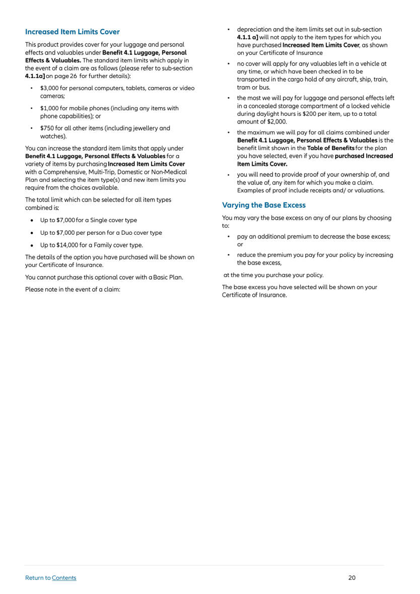
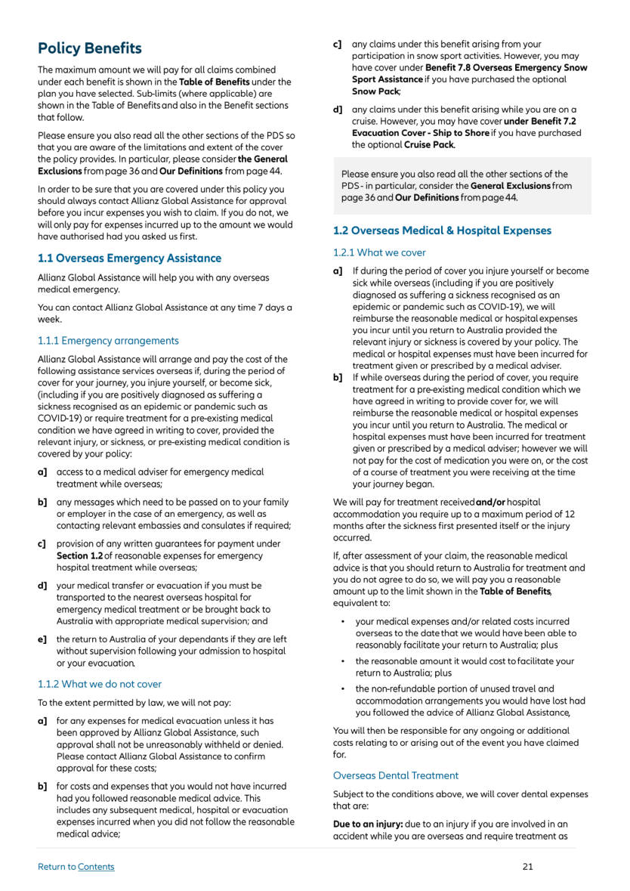
| Please ensure you also read all the other sections of the | ||
|---|---|---|
| PDS -in particular, consider the General Exclusions from | ||
| page 36 and Our Definitions from page 44. |
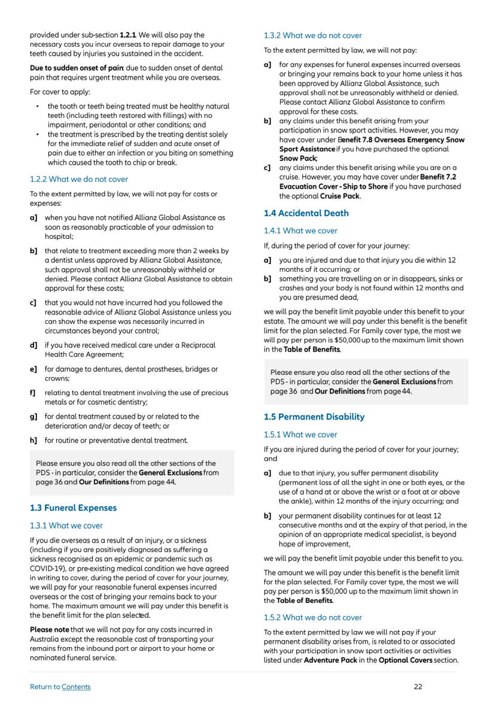
| Please ensure you also read all the other sections of the | ||
|---|---|---|
| PDS -in particular, consider the General Exclusions from | ||
| page 36 and Our Definitions from page 44. |
| Please ensure you also read all the other sections of the | ||
|---|---|---|
| PDS -in particular, consider the General Exclusions from | ||
| page 36 and Our Definitions from page 44. |
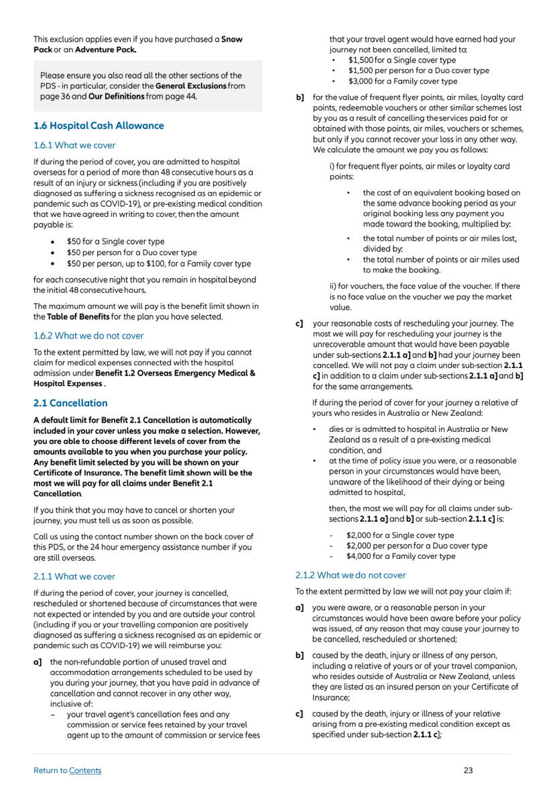
| Please ensure you also read all the other sections of the | ||
|---|---|---|
| PDS -in particular, consider the General Exclusions from | ||
| page 36 and Our Definitions from page 44. |
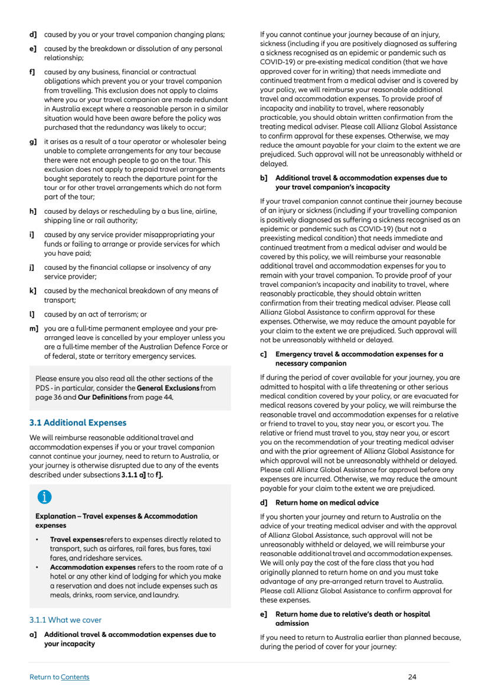
| Please ensure you also read all the other sections of the | ||
|---|---|---|
| PDS -in particular, consider the General Exclusions from | ||
| page 36 and Our Definitions from page 44. |
| 0 | ||
|---|---|---|
| Explanation - Travel expenses & Accommodation | ||
| expenses | ||
| Travel expenses refers to expenses directly related to | ||
| transport, such as airfares, rail fares, bus fares, taxi | ||
| fares, and rideshare services. | ||
| Accommodation expenses refers to the room rate of a | ||
| hotel or any other kind of lodging for which you make | ||
| a reservation and does not include expenses such as | ||
| meals, drinks, room service, and laundry. |
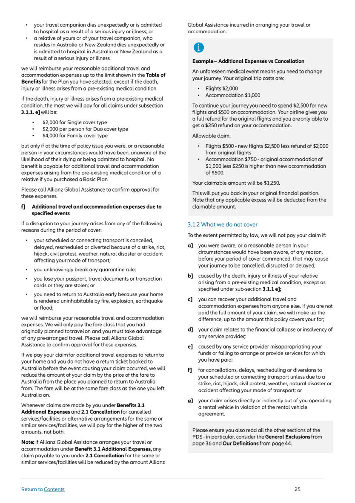
| 0 | ||
|---|---|---|
| Example - Additional Expenses vs Cancellation | ||
| An unforeseen medical event means you need to change | ||
| your journey. Your original trip costs are: | ||
| Flights $2,000 | ||
| Accommodation $1,000 | ||
| To continue your journey you need to spend $2,500 for new | ||
| flights and $500 on accommodation. Your airline gives you | ||
| a full refund for the original flights and you are only able to | ||
| get a $250 refund on your accommodation. | ||
| Allowable claim: | ||
| Flights $500 -new flights $2,500 less refund of $2,000 | ||
| from original flights | ||
| Accommodation $750 -original accommodation of | ||
| $1,000 less $250 is higher than new accommodation | ||
| of $500. | ||
| Your claimable amount will be $1,250. | ||
| This will put you back in your original financial position. | ||
| Note that any applicable excess will be deducted from the | ||
| claimable amount. |
| Please ensure you also read all the other sections of the | ||
|---|---|---|
| PDS -in particular, consider the General Exclusions from | ||
| page 36 and Our Definitions from page 44. |
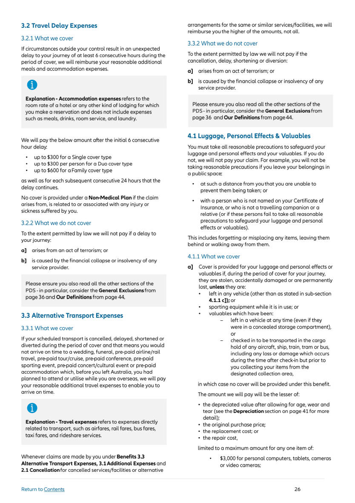
| 0 | ||
|---|---|---|
| Explanation -Accommodation expenses refers to the | ||
| room rate of a hotel or any other kind of lodging for which | ||
| you make a reservation and does not include expenses | ||
| such as meals, drinks, room service, and laundry. |
| Please ensure you also read all the other sections of the | ||
|---|---|---|
| PDS -in particular, consider the General Exclusions from | ||
| page 36 and Our Definitions from page 44. |
| 0 | ||
|---|---|---|
| Explanation -Travel expenses refers to expenses directly | ||
| related to transport, such as airfares, rail fares, bus fares, | ||
| taxi fares, and rideshare services. |
| Please ensure you also read all the other sections of the PDS -in particular, consider the General Exclusions from page 36 and Our Definitions from page 44. |
|---|
| Please ensure you also read all the other sections of the |
|---|
| PDS -in particular, consider the General Exclusions from |
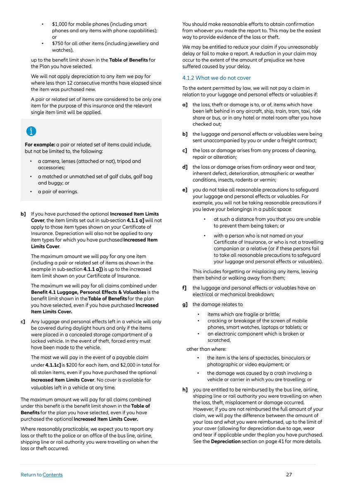
| 0 | ||
|---|---|---|
| For example: a pair or related set of items could include, | ||
| but not be limited to, the following: | ||
| a camera, lenses (attached or not), tripod and | ||
| accessories; | ||
| a matched or unmatched set of golf clubs, golf bag | ||
| and buggy; or | ||
| a pair of earrings. |
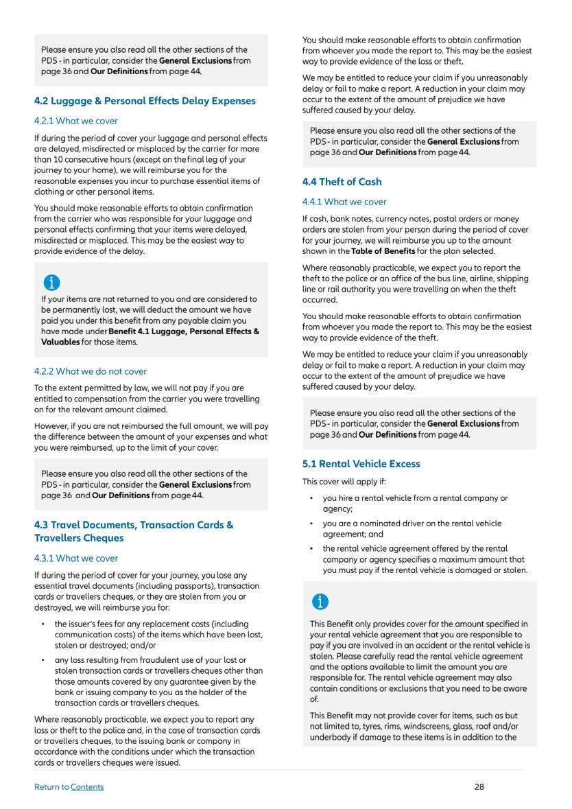
| Please ensure you also read all the other sections of the | ||
|---|---|---|
| PDS -in particular, consider the General Exclusions from | ||
| page 36 and Our Definitions from page 44. |
| 0 | ||
|---|---|---|
| If your items are not returned to you and are considered to | ||
| be permanently lost, we will deduct the amount we have | ||
| paid you under this benefit from any payable claim you | ||
| have made under Benefit 4.1 Luggage, Personal Effects & | ||
| Valuables for those items. |
| Please ensure you also read all the other sections of the | ||
|---|---|---|
| PDS -in particular, consider the General Exclusions from | ||
| page 36 and Our Definitions from page 44. |
| Please ensure you also read all the other sections of the | ||
|---|---|---|
| PDS -in particular, consider the General Exclusions from | ||
| page 36 and Our Definitions from page 44. |
| Please ensure you also read all the other sections of the | ||
|---|---|---|
| PDS -in particular, consider the General Exclusions from | ||
| page 36 and Our Definitions from page 44. |
| 0 | ||
|---|---|---|
| This Benefit only provides cover for the amount specified in | ||
| your rental vehicle agreement that you are responsible to | ||
| pay if you are involved in an accident or the rental vehicle is | ||
| stolen. Please carefully read the rental vehicle agreement | ||
| and the options available to limit the amount you are | ||
| responsible for. The rental vehicle agreement may also | ||
| contain conditions or exclusions that you need to be aware | ||
| of. | ||
| This Benefit may not provide cover for items, such as but | ||
| not limited to, tyres, rims, windscreens, glass, roof and/or | ||
| underbody if damage to these items is in addition to the |
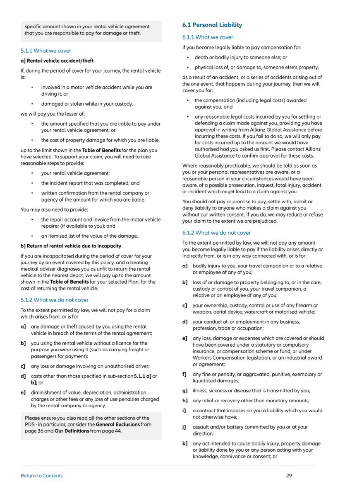
| specific amount shown in your rental vehicle agreement | ||
|---|---|---|
| that you are responsible to pay for damage or theft. |
| Please ensure you also read all the other sections of the | ||
|---|---|---|
| PDS -in particular, consider the General Exclusions from | ||
| page 36 and Our Definitions from page 44. |
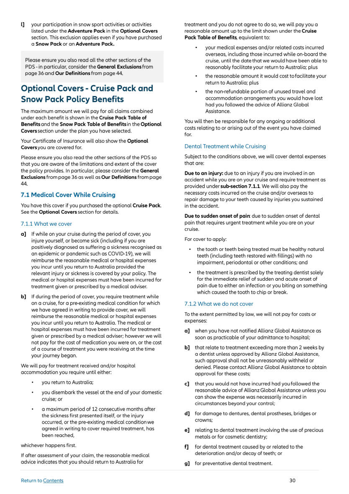
| Please ensure you also read all the other sections of the | ||
|---|---|---|
| PDS -in particular, consider the General Exclusions from | ||
| page 36 and Our Definitions from page 44. |
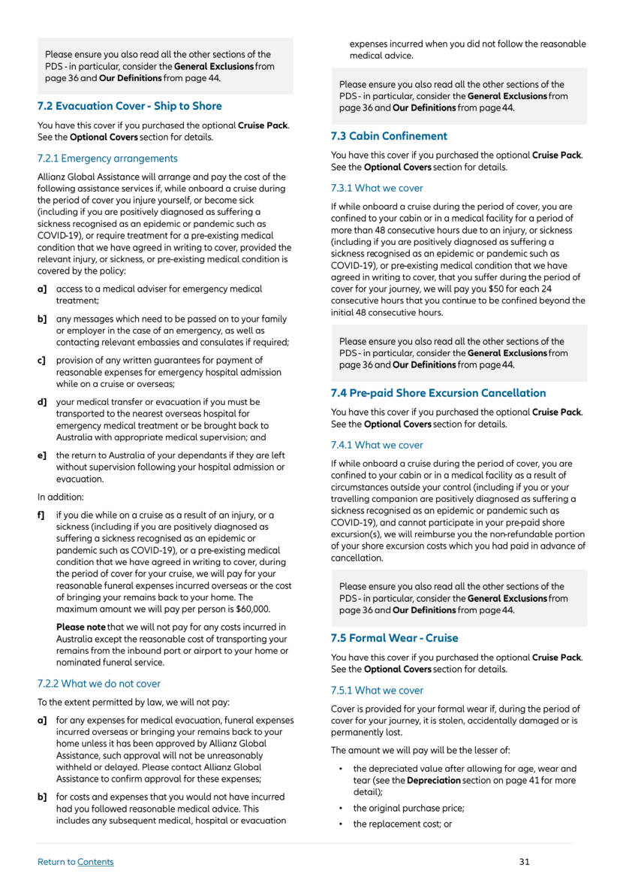
| Please ensure you also read all the other sections of the | ||
|---|---|---|
| PDS -in particular, consider the General Exclusions from | ||
| page 36 and Our Definitions from page 44. |
| Please ensure you also read all the other sections of the | ||
|---|---|---|
| PDS -in particular, consider the General Exclusions from | ||
| page 36 and Our Definitions from page 44. |
| Please ensure you also read all the other sections of the | ||
|---|---|---|
| PDS -in particular, consider the General Exclusions from | ||
| page 36 and Our Definitions from page 44. |
| Please ensure you also read all the other sections of the | ||
|---|---|---|
| PDS -in particular, consider the General Exclusions from | ||
| page 36 and Our Definitions from page 44. |
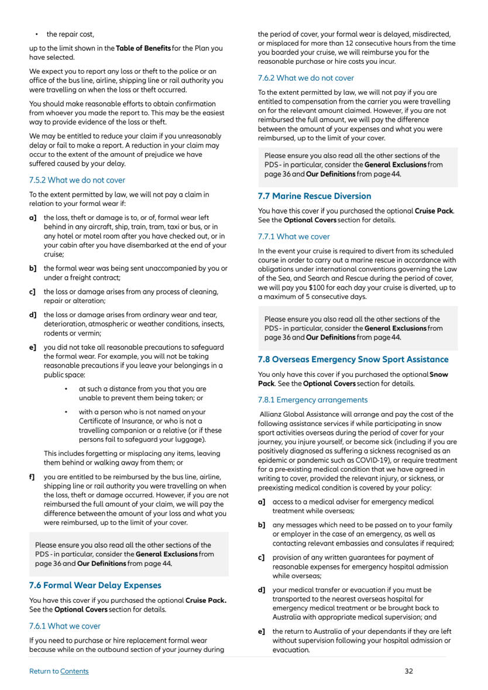
| Please ensure you also read all the other sections of the | ||
|---|---|---|
| PDS -in particular, consider the General Exclusions from | ||
| page 36 and Our Definitions from page 44. |
| Please ensure you also read all the other sections of the | ||
|---|---|---|
| PDS -in particular, consider the General Exclusions from | ||
| page 36 and Our Definitions from page 44. |
| Please ensure you also read all the other sections of the | ||
|---|---|---|
| PDS -in particular, consider the General Exclusions from | ||
| page 36 and Our Definitions from page 44. |
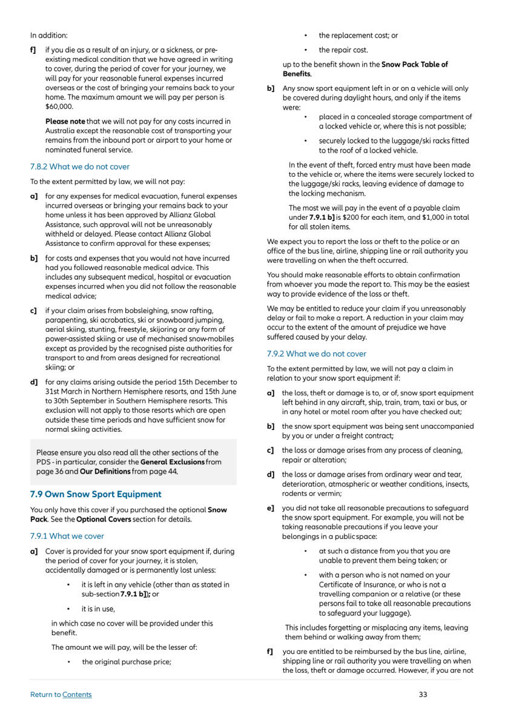
| Please ensure you also read all the other sections of the | ||
|---|---|---|
| PDS -in particular, consider the General Exclusions from | ||
| page 36 and Our Definitions from page 44. |
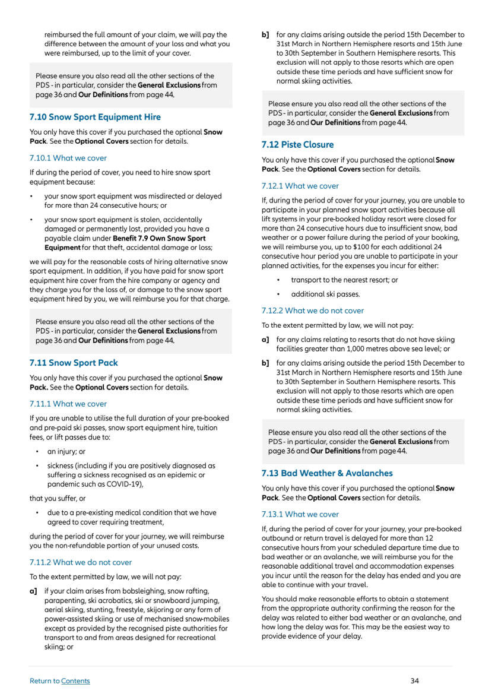
| Please ensure you also read all the other sections of the | ||
|---|---|---|
| PDS -in particular, consider the General Exclusions from | ||
| page 36 and Our Definitions from page 44. |
| Please ensure you also read all the other sections of the | ||
|---|---|---|
| PDS -in particular, consider the General Exclusions from | ||
| page 36 and Our Definitions from page 44. |
| Please ensure you also read all the other sections of the | ||
|---|---|---|
| PDS -in particular, consider the General Exclusions from | ||
| page 36 and Our Definitions from page 44. |
| Please ensure you also read all the other sections of the | ||
|---|---|---|
| PDS -in particular, consider the General Exclusions from | ||
| page 36 and Our Definitions from page 44. |
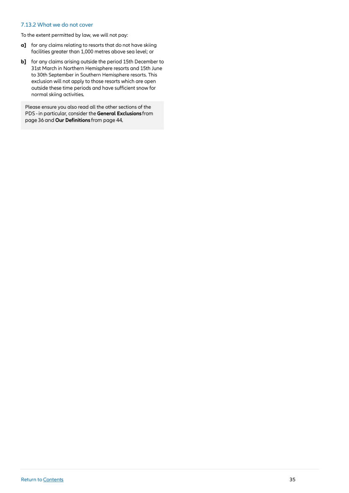
| Please ensure you also read all the other sections of the | ||
|---|---|---|
| PDS -in particular, consider the General Exclusions from | ||
| page 36 and Our Definitions from page 44. |
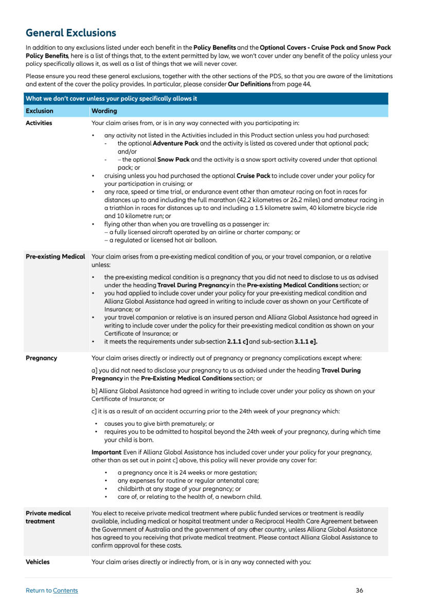
| What we don't cover unless your policy specifically allows it | |
|---|---|
| Exclusion | Wording |
| Pre-existing Medical | Your claim arises from a pre-existing medical condition of you, or your travel companion, or a relative |
|---|---|
| unless: | |
| the pre-existing medical condition is a pregnancy that you did not need to disclose to us as advised | |
| under the heading Travel During Pregnancy in the Pre-existing Medical Conditions section; or | |
| you had applied to include cover under your policy for your pre-existing medical condition and | |
| Allianz Global Assistance had agreed in writing to include cover as shown on your Certificate of | |
| Insurance; or | |
| your travel companion or relative is an insured person and Allianz Global Assistance had agreed in | |
| writing to include cover under the policy for their pre-existing medical condition as shown on your | |
| Certificate of Insurance; or | |
| it meets the requirements under sub-section 2.1.1 c] and sub-section 3.1.1 e]. |
| Private medical treatment | You elect to receive private medical treatment where public funded services or treatment is readily |
|---|---|
| available, including medical or hospital treatment under a Reciprocal Health Care Agreement between | |
| the Government of Australia and the government of any other country, unless Allianz Global Assistance | |
| has agreed to you receiving that private medical treatment. Please contact Allianz Global Assistance to | |
| confirm approval for these costs. |
| What we don't cover unless your policy specifically allows it | What we don't cover unless your policy specifically allows it | What we don't cover unless your policy specifically allows it |
|---|---|---|
| Exclusion | Wording | |
| Activities | Your claim arises from, or is in any way connected with you participating in: | |
| any activity not listed in the Activities included in this Product section unless you had purchased: the optional Adventure Pack and the activity is listed as covered under that optional pack; | ||
| and/or | ||
| – the optional Snow Pack and the activity is a snow sport activity covered under that optional pack; or cruising unless you had purchased the optional Cruise Pack to include cover under your policy for | ||
| your participation in cruising; or any race, speed or time trial, or endurance event other than amateur racing on foot in races for | ||
| distances up to and including the full marathon (42.2 kilometres or 26.2 miles) and amateur racing in a triathlon in races for distances up to and including a 1.5 kilometre swim, 40 kilometre bicycle ride and 10 kilometre run; or | ||
| flying other than when you are travelling as a passenger in: – a fully licensed aircraft operated by an airline or charter company; or – a regulated or licensed hot air balloon. | ||
| Pre-existing Medical | Your claim arises from a pre-existing medical condition of you, or your travel companion, or a relative | |
| unless: | the pre-existing medical condition is a pregnancy that you did not need to disclose to us as advised | |
| under the heading Travel During Pregnancy in the Pre-existing Medical Conditions section; or you had applied to include cover under your policy for your pre-existing medical condition and | ||
| Insurance; or | Allianz Global Assistance had agreed in writing to include cover as shown on your Certificate of | |
| Certificate of Insurance; or | your travel companion or relative is an insured person and Allianz Global Assistance had agreed in writing to include cover under the policy for their pre-existing medical condition as shown on your | |
| it meets the requirements under sub-section 2.1.1 c] and sub-section 3.1.1 e]. | ||
| Pregnancy | Your claim arises directly or indirectly out of pregnancy or pregnancy complications except where: | |
| a] you did not need to disclose your pregnancy to us as advised under the heading Travel During | ||
| Pregnancy in the Pre-Existing Medical Conditions section; or b] Allianz Global Assistance had agreed in writing to include cover under your policy as shown on your | ||
| Certificate of Insurance; or c] it is as a result of an accident occurring prior to the 24th week of your pregnancy which: | ||
| • causes you to give birth prematurely; or | ||
| your child is born. | requires you to be admitted to hospital beyond the 24th week of your pregnancy, during which time | |
| Important: Even if Allianz Global Assistance has included cover under your policy for your pregnancy, other than as set out in point c] above, this policy will never provide any cover for: | ||
| a pregnancy once it is 24 weeks or more gestation; | ||
| any expenses for routine or regular antenatal care; | ||
| childbirth at any stage of your pregnancy; or care of, or relating to the health of, a newborn child. | ||
| Private medical | You elect to receive private medical treatment where public funded services or treatment is readily | |
| treatment | available, including medical or hospital treatment under a Reciprocal Health Care Agreement between the Government of Australia and the government of any other country, unless Allianz Global Assistance | |
| confirm approval for these costs. | has agreed to you receiving that private medical treatment. Please contact Allianz Global Assistance to |
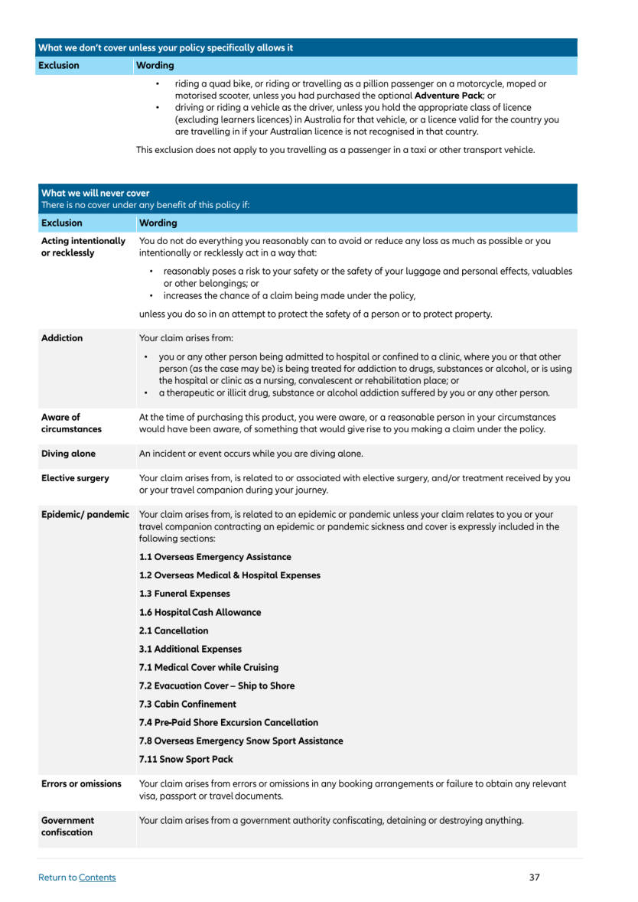
| What we don't cover unless your policy specifically allows it | |
|---|---|
| Exclusion | Wording |
| What we will never cover | |
|---|---|
| There is no cover under any benefit of this policy if: | |
| Exclusion | Wording |
| Addiction | Your claim arises from: |
|---|---|
| you or any other person being admitted to hospital or confined to a clinic, where you or that other | |
| person (as the case may be) is being treated for addiction to drugs, substances or alcohol, or is using | |
| the hospital or clinic as a nursing, convalescent or rehabilitation place; or | |
| a therapeutic or illicit drug, substance or alcohol addiction suffered by you or any other person. |
| Diving alone | An incident or event occurs while you are diving alone. |
|---|
| Epidemic/ pandemic | Your claim arises from, is related to an epidemic or pandemic unless your claim relates to you or your |
|---|---|
| travel companion contracting an epidemic or pandemic sickness and cover is expressly included in the | |
| following sections: | |
| 1.1 Overseas Emergency Assistance | |
| 1.2 Overseas Medical & Hospital Expenses | |
| 1.3 Funeral Expenses | |
| 1.6 Hospital Cash Allowance | |
| 2.1 Cancellation | |
| 3.1 Additional Expenses | |
| 7.1 Medical Cover while Cruising | |
| 7.2 Evacuation Cover - Ship to Shore | |
| 7.3 Cabin Confinement | |
| 7.4 Pre-Paid Shore Excursion Cancellation | |
| 7.8 Overseas Emergency Snow Sport Assistance | |
| 7.11 Snow Sport Pack |
| Government | Your claim arises from a government authority confiscating, detaining or destroying anything. |
|---|---|
| confiscation |
| What we don't cover unless your policy specifically allows it | What we don't cover unless your policy specifically allows it |
|---|---|
| Exclusion | Wording |
| riding a quad bike, or riding or travelling as a pillion passenger on a motorcycle, moped or motorised scooter, unless you had purchased the optional Adventure Pack; or | |
| driving or riding a vehicle as the driver, unless you hold the appropriate class of licence (excluding learners licences) in Australia for that vehicle, or a licence valid for the country you are travelling in if your Australian licence is not recognised in that country. |
| What we will never cover There is no cover under any benefit of this policy if: | What we will never cover There is no cover under any benefit of this policy if: |
|---|---|
| Exclusion | Wording |
| Acting intentionally or recklessly | You do not do everything you reasonably can to avoid or reduce any loss as much as possible or you intentionally or recklessly act in a way that: |
| reasonably poses a risk to your safety or the safety of your luggage and personal effects, valuables or other belongings; or | |
| increases the chance of a claim being made under the policy, | |
| unless you do so in an attempt to protect the safety of a person or to protect property. | |
| Addiction | Your claim arises from: |
| you or any other person being admitted to hospital or confined to a clinic, where you or that other person (as the case may be) is being treated for addiction to drugs, substances or alcohol, or is using the hospital or clinic as a nursing, convalescent or rehabilitation place; or | |
| Aware of | a therapeutic or illicit drug, substance or alcohol addiction suffered by you or any other person. At the time of purchasing this product, you were aware, or a reasonable person in your circumstances |
| circumstances Diving alone | would have been aware, of something that would give rise to you making a claim under the policy. An incident or event occurs while you are diving alone. |
| Elective surgery | Your claim arises from, is related to or associated with elective surgery, and/or treatment received by you |
| Epidemic/ pandemic | or your travel companion during your journey. Your claim arises from, is related to an epidemic or pandemic unless your claim relates to you or your |
| travel companion contracting an epidemic or pandemic sickness and cover is expressly included in the following sections: | |
| 1.1 Overseas Emergency Assistance | |
| 1.2 Overseas Medical & Hospital Expenses 1.3 Funeral Expenses | |
| 1.6 Hospital Cash Allowance | |
| 2.1 Cancellation | |
| 3.1 Additional Expenses | |
| 7.1 Medical Cover while Cruising | |
| 7.2 Evacuation Cover – Ship to Shore | |
| 7.3 Cabin Confinement | |
| 7.4 Pre-Paid Shore Excursion Cancellation | |
| 7.8 Overseas Emergency Snow Sport Assistance | |
| 7.11 Snow Sport Pack | |
| Errors or omissions | Your claim arises from errors or omissions in any booking arrangements or failure to obtain any relevant |
| visa, passport or travel documents. | |
| Government confiscation | Your claim arises from a government authority confiscating, detaining or destroying anything. |
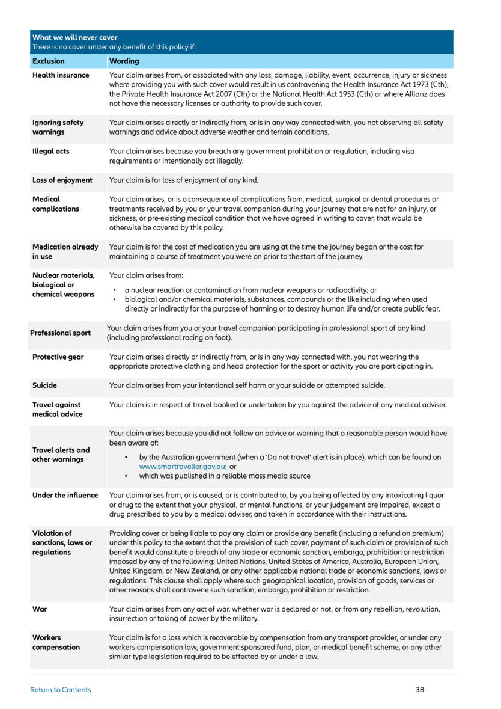
| What we will never cover | |
|---|---|
| There is no cover under any benefit of this policy if: | |
| Exclusion | Wording |
| Ignoring safety | Your claim arises directly or indirectly from, or is in any way connected with, you not observing all safety |
|---|---|
| warnings | warnings and advice about adverse weather and terrain conditions. |
| Loss of enjoyment | Your claim is for loss of enjoyment of any kind. |
|---|
| Medication already | Your claim is for the cost of medication you are using at the time the journey began or the cost for |
|---|---|
| in use | maintaining a course of treatment you were on prior to the start of the journey. |
| Professional sport | Your claim arises from you or your travel companion participating in professional sport of any kind (including professional racing on foot). |
|---|
| Suicide | Your claim arises from your intentional self harm or your suicide or attempted suicide. |
|---|
| Your claim arises because you did not follow an advice or warning that a reasonable person would have | |
|---|---|
| been aware of: | |
| Travel alerts and | |
| other warnings | by the Australian government (when a 'Do not travel' alert is in place), which can be found on |
| www.smartraveller.gov.au; or | |
| which was published in a reliable mass media source |
| Violation of | Providing cover or being liable to pay any claim or provide any benefit (including a refund on premium) |
|---|---|
| sanctions, laws or | under this policy to the extent that the provision of such cover, payment of such claim or provision of such |
| regulations | benefit would constitute a breach of any trade or economic sanction, embargo, prohibition or restriction |
| imposed by any of the following: United Nations, United States of America, Australia, European Union, | |
| United Kingdom, or New Zealand, or any other applicable national trade or economic sanctions, laws or | |
| regulations. This clause shall apply where such geographical location, provision of goods, services or | |
| other reasons shall contravene such sanction, embargo, prohibition or restriction. |
| Workers | Your claim is for a loss which is recoverable by compensation from any transport provider, or under any |
|---|---|
| compensation | workers compensation law, government sponsored fund, plan, or medical benefit scheme, or any other |
| similar type legislation required to be effected by or under a law. |
| What we will never coverThere is no cover under any benefit of this policy if:Wording | What we will never coverThere is no cover under any benefit of this policy if:Wording | What we will never coverThere is no cover under any benefit of this policy if:Wording | ||
|---|---|---|---|---|
| What we will never coverThere is no cover under any benefit of this policy if:Wording | What we will never coverThere is no cover under any benefit of this policy if:Wording | What we will never coverThere is no cover under any benefit of this policy if:Wording | Exclusion | |
| Health insurance | Your claim arises from, or associated with any loss, damage, liability, event, occurrence, injury or sicknesswhere providing you with such cover would result in us contravening the Health Insurance Act 1973 (Cth),the Private Health Insurance Act 2007 (Cth) or the National Health Act 1953 (Cth) or where Allianz doesnot have the necessary licenses or authority to provide such cover. | Your claim arises from, or associated with any loss, damage, liability, event, occurrence, injury or sicknesswhere providing you with such cover would result in us contravening the Health Insurance Act 1973 (Cth),the Private Health Insurance Act 2007 (Cth) or the National Health Act 1953 (Cth) or where Allianz doesnot have the necessary licenses or authority to provide such cover. | ||
| Your claim arises from, or associated with any loss, damage, liability, event, occurrence, injury or sicknesswhere providing you with such cover would result in us contravening the Health Insurance Act 1973 (Cth),the Private Health Insurance Act 2007 (Cth) or the National Health Act 1953 (Cth) or where Allianz doesnot have the necessary licenses or authority to provide such cover. | Your claim arises from, or associated with any loss, damage, liability, event, occurrence, injury or sicknesswhere providing you with such cover would result in us contravening the Health Insurance Act 1973 (Cth),the Private Health Insurance Act 2007 (Cth) or the National Health Act 1953 (Cth) or where Allianz doesnot have the necessary licenses or authority to provide such cover. | where provi | vidina | |
| Your claim arises from, or associated with any loss, damage, liability, event, occurrence, injury or sicknesswhere providing you with such cover would result in us contravening the Health Insurance Act 1973 (Cth),the Private Health Insurance Act 2007 (Cth) or the National Health Act 1953 (Cth) or where Allianz doesnot have the necessary licenses or authority to provide such cover. | Your claim arises from, or associated with any loss, damage, liability, event, occurrence, injury or sicknesswhere providing you with such cover would result in us contravening the Health Insurance Act 1973 (Cth),the Private Health Insurance Act 2007 (Cth) or the National Health Act 1953 (Cth) or where Allianz doesnot have the necessary licenses or authority to provide such cover. | |||
| Your claim arises from, or associated with any loss, damage, liability, event, occurrence, injury or sicknesswhere providing you with such cover would result in us contravening the Health Insurance Act 1973 (Cth),the Private Health Insurance Act 2007 (Cth) or the National Health Act 1953 (Cth) or where Allianz doesnot have the necessary licenses or authority to provide such cover. | Your claim arises from, or associated with any loss, damage, liability, event, occurrence, injury or sicknesswhere providing you with such cover would result in us contravening the Health Insurance Act 1973 (Cth),the Private Health Insurance Act 2007 (Cth) or the National Health Act 1953 (Cth) or where Allianz doesnot have the necessary licenses or authority to provide such cover. | |||
| Ignoring safety | Your claim arises directly or indirectly from, or is in any way connected with, you not observing all safetywarnings and advice about adverse weather and terrain conditions. | Your claim arises directly or indirectly from, or is in any way connected with, you not observing all safetywarnings and advice about adverse weather and terrain conditions. | ||
| warnings | Your claim arises directly or indirectly from, or is in any way connected with, you not observing all safetywarnings and advice about adverse weather and terrain conditions. | Your claim arises directly or indirectly from, or is in any way connected with, you not observing all safetywarnings and advice about adverse weather and terrain conditions. | ||
| Illegal acts | Your claim arises because you breach any government prohibition or regulation, including visarequirements or intentionally act illegally. | Your claim arises because you breach any government prohibition or regulation, including visarequirements or intentionally act illegally. | ||
| Your claim arises because you breach any government prohibition or regulation, including visarequirements or intentionally act illegally. | Your claim arises because you breach any government prohibition or regulation, including visarequirements or intentionally act illegally. | |||
| Loss of enjoyment | Your claim is for loss of enjoyment of any kind. | Your claim is for loss of enjoyment of any kind. | ||
| Medical | Your claim arises, or is a consequence of complications from, medical, surgical or dental procedures ortreatments received by you or your travel companion during your journey that are not for an injury, orsickness, or pre-existing medical condition that we have agreed in writing to cover, that would beotherwise be covered by this policy. | Your claim arises, or is a consequence of complications from, medical, surgical or dental procedures ortreatments received by you or your travel companion during your journey that are not for an injury, orsickness, or pre-existing medical condition that we have agreed in writing to cover, that would beotherwise be covered by this policy. | ||
| complications | Your claim arises, or is a consequence of complications from, medical, surgical or dental procedures ortreatments received by you or your travel companion during your journey that are not for an injury, orsickness, or pre-existing medical condition that we have agreed in writing to cover, that would beotherwise be covered by this policy. | Your claim arises, or is a consequence of complications from, medical, surgical or dental procedures ortreatments received by you or your travel companion during your journey that are not for an injury, orsickness, or pre-existing medical condition that we have agreed in writing to cover, that would beotherwise be covered by this policy. | treatments received by you or | |
| Your claim arises, or is a consequence of complications from, medical, surgical or dental procedures ortreatments received by you or your travel companion during your journey that are not for an injury, orsickness, or pre-existing medical condition that we have agreed in writing to cover, that would beotherwise be covered by this policy. | Your claim arises, or is a consequence of complications from, medical, surgical or dental procedures ortreatments received by you or your travel companion during your journey that are not for an injury, orsickness, or pre-existing medical condition that we have agreed in writing to cover, that would beotherwise be covered by this policy. | |||
| Your claim arises, or is a consequence of complications from, medical, surgical or dental procedures ortreatments received by you or your travel companion during your journey that are not for an injury, orsickness, or pre-existing medical condition that we have agreed in writing to cover, that would beotherwise be covered by this policy. | Your claim arises, or is a consequence of complications from, medical, surgical or dental procedures ortreatments received by you or your travel companion during your journey that are not for an injury, orsickness, or pre-existing medical condition that we have agreed in writing to cover, that would beotherwise be covered by this policy. | |||
| Medication already | Your claim is for the cost of medication you are using at the time the journey began or the cost formaintaining a course of treatment you were on prior to the start of the journey. | Your claim is for the cost of medication you are using at the time the journey began or the cost formaintaining a course of treatment you were on prior to the start of the journey. | ||
| in use | Your claim is for the cost of medication you are using at the time the journey began or the cost formaintaining a course of treatment you were on prior to the start of the journey. | Your claim is for the cost of medication you are using at the time the journey began or the cost formaintaining a course of treatment you were on prior to the start of the journey. | ||
| Nuclear materials,biological orchemical weapons | Your claim arises from:a nuclear reaction or contamination from nuclear weapons or radioactivity; orbiological and/or chemical materials, substances, compounds or the like including when useddirectly or indirectly for the purpose of harming or to destroy human life and/or create public fear. | Your claim arises from:a nuclear reaction or contamination from nuclear weapons or radioactivity; orbiological and/or chemical materials, substances, compounds or the like including when useddirectly or indirectly for the purpose of harming or to destroy human life and/or create public fear. | ||
| Your claim arises from:a nuclear reaction or contamination from nuclear weapons or radioactivity; orbiological and/or chemical materials, substances, compounds or the like including when useddirectly or indirectly for the purpose of harming or to destroy human life and/or create public fear. | Your claim arises from:a nuclear reaction or contamination from nuclear weapons or radioactivity; orbiological and/or chemical materials, substances, compounds or the like including when useddirectly or indirectly for the purpose of harming or to destroy human life and/or create public fear. | |||
| Professional sport | Your claim arises from you or your travel companion participating in professional sport of any kind(including professional racing on foot). | Your claim arises from you or your travel companion participating in professional sport of any kind(including professional racing on foot). | ||
| Protective gear | Your claim arises directly or indirectly from, or is in any way connected with, you not wearing theappropriate protective clothing and head protection for the sport or activity you are participating in. | Your claim arises directly or indirectly from, or is in any way connected with, you not wearing theappropriate protective clothing and head protection for the sport or activity you are participating in. | ||
| Suicide | Your claim arises from your intentional self harm or your suicide or attempted suicide. | Your claim arises from your intentional self harm or your suicide or attempted suicide. | ||
| Travel against | Your claim is in respect of travel booked or undertaken by you against the advice of any medical adviser. | Your claim is in respect of travel booked or undertaken by you against the advice of any medical adviser. | ||
| medical advice | Your claim is in respect of travel booked or undertaken by you against the advice of any medical adviser. | Your claim is in respect of travel booked or undertaken by you against the advice of any medical adviser. | ||
| Travel alerts andother warnings | Your claim arises because you did not follow an advice or warning that a reasonable person would havebeen aware of:by the Australian government (when a 'Do not travel’ alert is in place), which can be found onwww.smartraveller.gov.au; orwhich was published in a reliable mass media source | Your claim arises because you did not follow an advice or warning that a reasonable person would havebeen aware of:by the Australian government (when a 'Do not travel’ alert is in place), which can be found onwww.smartraveller.gov.au; orwhich was published in a reliable mass media source | ||
| Under the influence | Your claim arises from, or is caused, or is contributed to, by you being affected by any intoxicating liquoror drug to the extent that your physical, or mental functions, or your judgement are impaired, except adrug prescribed to you by a medical adviser, and taken in accordance with their instructions. | Your claim arises from, or is caused, or is contributed to, by you being affected by any intoxicating liquoror drug to the extent that your physical, or mental functions, or your judgement are impaired, except adrug prescribed to you by a medical adviser, and taken in accordance with their instructions. | ||
| Violation ofsanctions, laws orregulations | Providing cover or being liable to pay any claim or provide any benefit (including a refund on premium)under this policy to the extent that the provision of such cover, payment of such claim or provision of suchbenefit would constitute a breach of any trade or economic sanction, embargo, prohibition or restrictionimposed by any of the following: United Nations, United States of America, Australia, European Union,United Kingdom, or New Zealand, or any other applicable national trade or economic sanctions, laws orregulations. This clause shall apply where such geographical location, provision of goods, services orother reasons shall contravene such sanction, embargo, prohibition or restriction. | Providing cover or being liable to pay any claim or provide any benefit (including a refund on premium)under this policy to the extent that the provision of such cover, payment of such claim or provision of suchbenefit would constitute a breach of any trade or economic sanction, embargo, prohibition or restrictionimposed by any of the following: United Nations, United States of America, Australia, European Union,United Kingdom, or New Zealand, or any other applicable national trade or economic sanctions, laws orregulations. This clause shall apply where such geographical location, provision of goods, services orother reasons shall contravene such sanction, embargo, prohibition or restriction. | ||
| War | Your claim arises from any act of war, whether war is declared or not, or from any rebellion, revolution,insurrection or taking of power by the military. | Your claim arises from any act of war, whether war is declared or not, or from any rebellion, revolution,insurrection or taking of power by the military. | ||
| Workerscompensation | Your claim is for a loss which is recoverable by compensation from any transport provider, or under anyworkers compensation law, government sponsored fund, plan, or medical benefit scheme, or any othersimilar type legislation required to be effected by or under a law. | Your claim is for a loss which is recoverable by compensation from any transport provider, or under anyworkers compensation law, government sponsored fund, plan, or medical benefit scheme, or any othersimilar type legislation required to be effected by or under a law. |
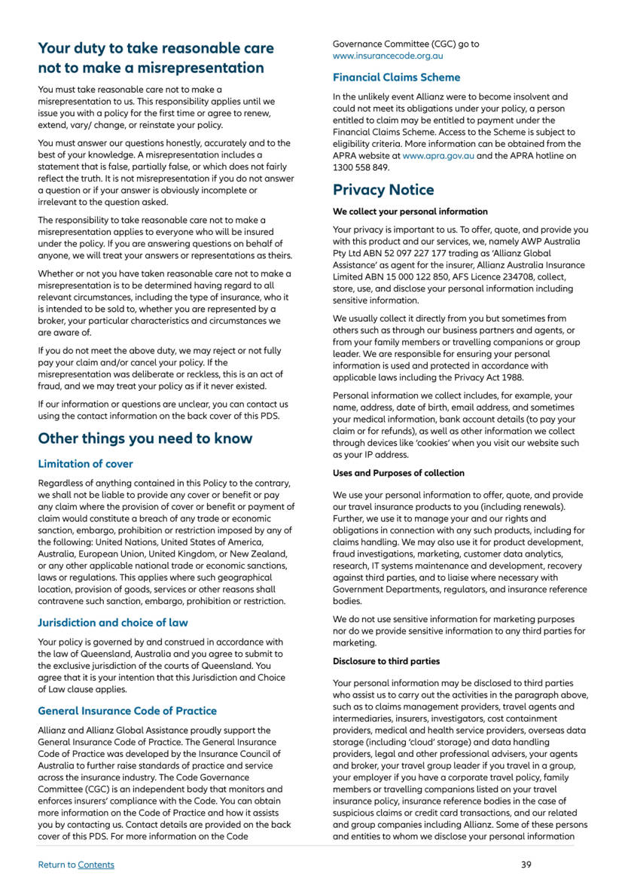
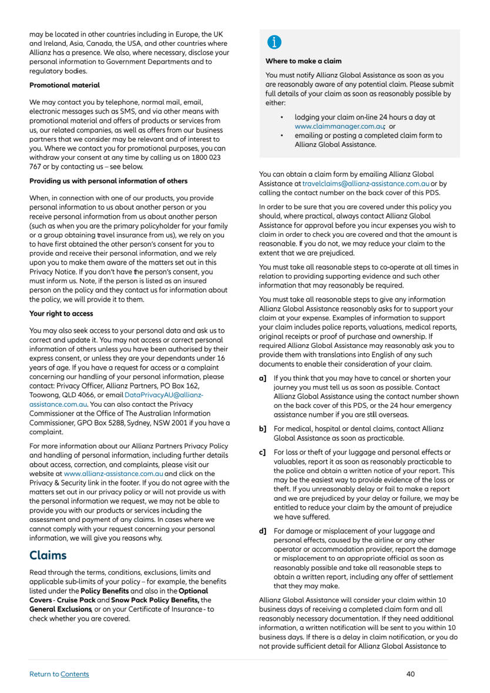
| 0 | ||
|---|---|---|
| Where to make a claim | ||
| You must notify Allianz Global Assistance as soon as you | ||
| are reasonably aware of any potential claim. Please submit | ||
| full details of your claim as soon as reasonably possible by | ||
| either: | ||
| lodging your claim on-line 24 hours a day at | ||
| www.claimmanager.com.au; or | ||
| emailing or posting a completed claim form to | ||
| Allianz Global Assistance. |
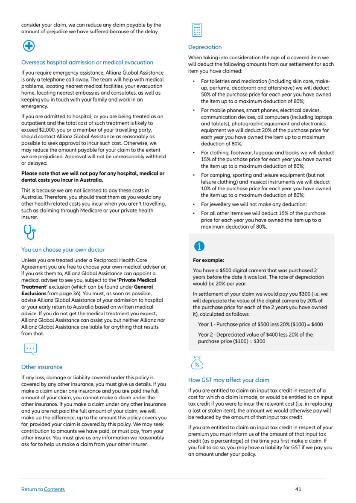
| 0 | ||
|---|---|---|
| For example: | ||
| You have a $500 digital camera that was purchased 2 | ||
| years before the date it was lost. The rate of depreciation | ||
| would be 20% per year. | ||
| In settlement of your claim we would pay you $300 (i.e. we | ||
| will depreciate the value of the digital camera by 20% of | ||
| the purchase price for each of the 2 years you have owned | ||
| it), calculated as follows: | ||
| Year 1 -Purchase price of $500 less 20% ($100) = $400 | ||
| Year 2 -Depreciated value of $400 less 20% of the | ||
| purchase price ($100) = $300 |
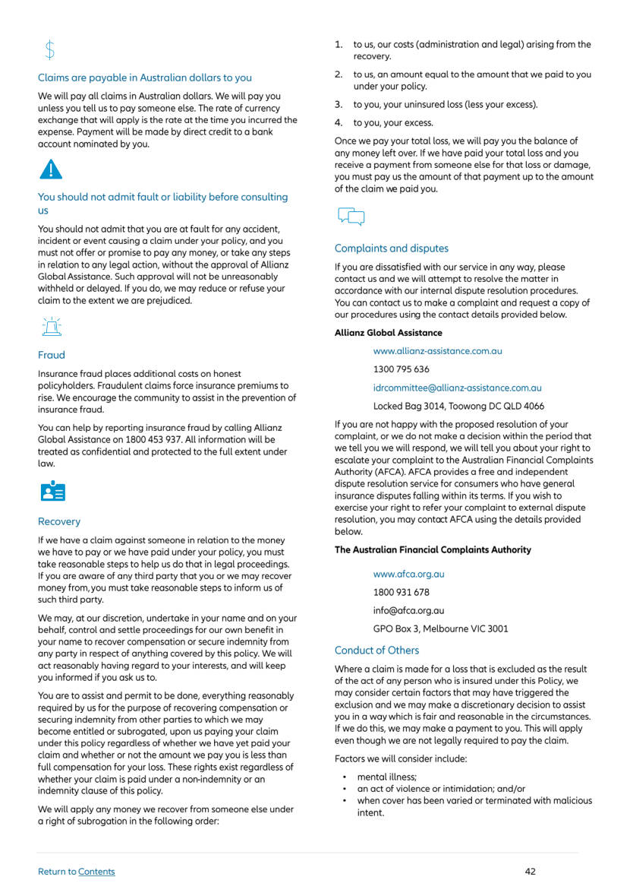
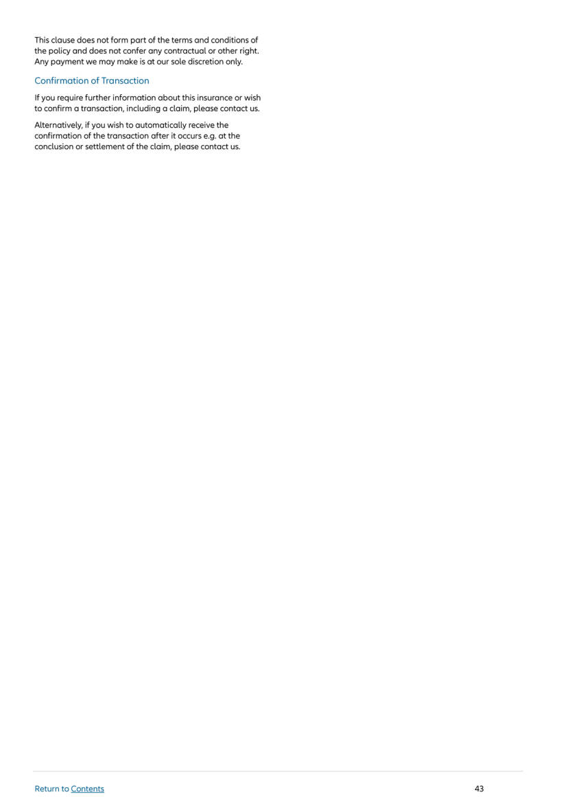
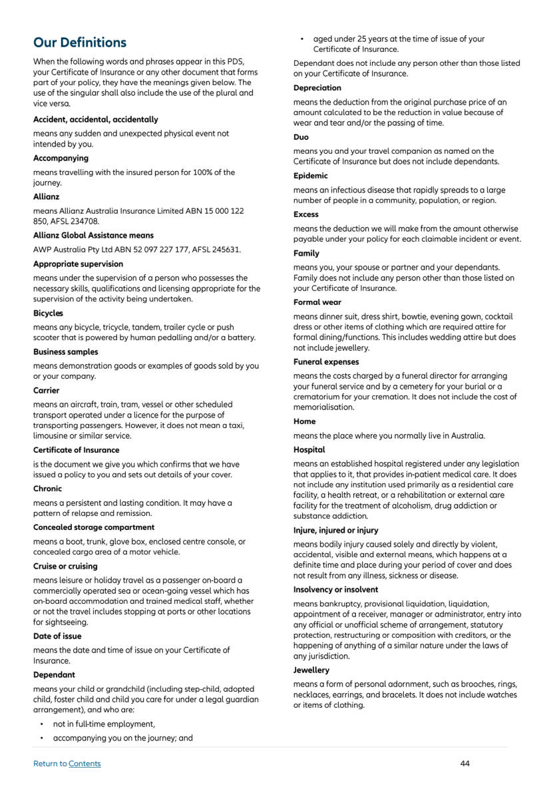
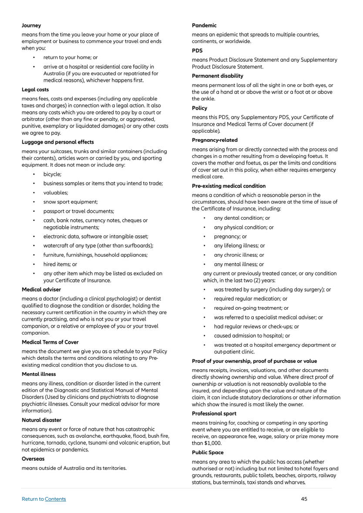
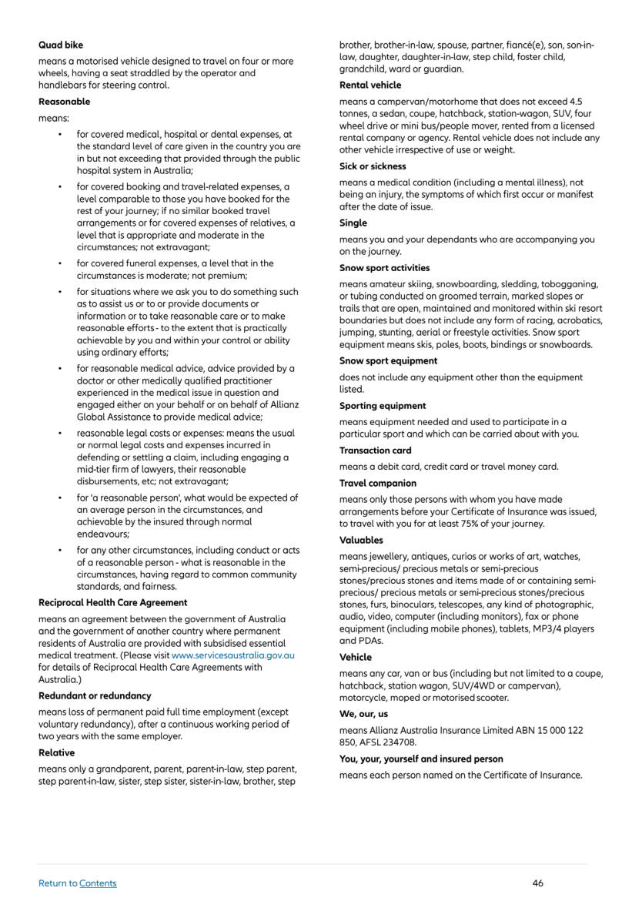
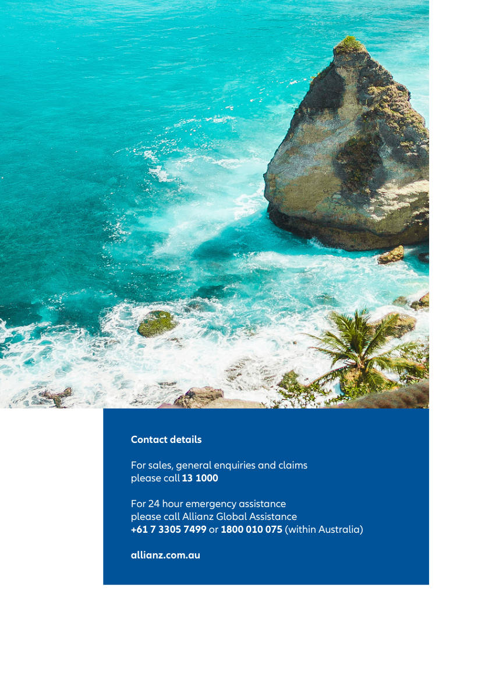
| (cid:38)(cid:82)n(cid:87)ac(cid:87) (cid:71)e(cid:87)a(cid:76)ls (cid:41)or sales(cid:15) (cid:74)eneral en(cid:84)uiries and claims (cid:83)lease call (cid:20)(cid:22) (cid:20)(cid:19)(cid:19)(cid:19) (cid:41)or (cid:21)(cid:23) (cid:75)our emer(cid:74)enc(cid:92) assistance (cid:83)lease call (cid:36)llian(cid:93) (cid:42)lo(cid:69)al (cid:36)ssistance (cid:14)(cid:25)(cid:20) (cid:26) (cid:22)(cid:22)(cid:19)(cid:24) (cid:26)(cid:23)(cid:28)(cid:28) or (cid:20)(cid:27)(cid:19)(cid:19) (cid:19)(cid:20)(cid:19) (cid:19)(cid:26)(cid:24) (cid:11)(cid:90)it(cid:75)in (cid:36)ustralia(cid:12) all(cid:76)an(cid:93)(cid:17)c(cid:82)(cid:80)(cid:17)au |
|---|